Parla BT tarafında dört personel rolü vardır. Rol, hesabınıza Kullanıcılar sayfasında atanır; hangi işlemleri yapabileceğinizi belirler. Menü dört rolde de aynıdır — roller menüyü değil, sayfaların içindeki işlemleri ve Kullanıcılar sayfasını sınırlar. Kılavuzda yönetici roller ifadesi Süper Admin, Destek Atayıcı ve Proje Yöneticisi'ni anlatır.
| Rol | Ne yapar? |
|---|---|
| Süper Admin | Her şeyi görür ve yönetir. Departman, modül ve destek türü tanımlarını, Veri Bakımı aracını, Süper Admin ve Destek Atayıcı rolü atamayı ve arşivdeki talepleri kalıcı silmeyi yalnızca bu rol yapar. |
| Destek Atayıcı | Günlük operasyonu yürütür: talepleri atar, durum/önceliği değiştirir, toplu işlem yapar, talebi arşive alır ve geri yükler; firma, kullanıcı (müşteri rolleri, danışman, proje yöneticisi), danışman, sözleşme (bedel dahil) ve hazır yanıt kayıtlarını yönetir; e-posta servisini izler. |
| Proje Yöneticisi | Talepleri Destek Atayıcı gibi yönetir (atama, durum, öncelik, efor, toplu işlem) ve proje kayıtlarını düzenler. Kullanıcı/firma/sözleşme yönetemez, sözleşme bedelini göremez, talep silemez. |
| Danışman | Tüm talepleri görüntüler ama yalnızca kendisine atanan talepte yazar (yanıt, iç not, işleme alma, müşteri testi, kapanış onayı isteme, efor). Atanmadığı talepte yazma denemesini veritabanı kuralları da reddeder. |
Matris kodda ve veritabanı kurallarında doğrulanan yetkileri özetler. Yetkisiz düğmeler çoğu sayfada hiç gösterilmez; yine de basılırsa işlem “Bu işlem için yetkiniz yok” uyarısıyla durur. Yetkinin asıl kaynağı veritabanı kurallarıdır: arayüz atlansa bile, danışman başkasının talebine yazamaz, PM sözleşme bedelini okuyamaz.
| Özellik | Süper Adminsuper_admin | Destek Atayıcıservice_admin | Proje Yöneticisiproject_manager | Danışmanconsultant |
|---|---|---|---|---|
| Talepler | ||||
| Tüm talepleri listeleme, arama, dışa aktarmaDanışman dahil her personel rolü tüm talepleri okur; CSV/Excel dışa aktarma süzülmüş listeyi verir. | ||||
| Yeni talep oluşturmaMuhatap seçimi ve yeni firma kaydı yalnızca Süper Admin / Destek Atayıcı'da çalışır. PRJ talebinde proje seçimi zorunludur. | ||||
| Admin Paneli: durum, öncelik, talep tipi, proje, danışman atamaDanışman yalnızca Hızlı İşlemler'i görür. | ||||
| Hızlı işlemler (İşleme Al, Müşteri Testi, Kapanış Onayı İste, İşleme Geri Al)Danışman: yalnızca kendisine atanmış talepte. | ||||
| Müşteri Adına Kapat, Kapat, Yeniden Aç | ||||
| Yanıt yazma, iç not, dosya eklemeDanışman: yalnızca atandığı talepte. | ||||
| Efor ekleme / silmeDanışman yalnızca atandığı talepte efor ekler; efor silmeyi yöneticiler ve girenin kendisi yapar. | ||||
| Toplu atama, toplu durum değişikliği (en çok 300 talep) | ||||
| Talebi arşive alma (yumuşak silme) ve geri yükleme | ||||
| Arşivdeki talebi kalıcı silmeMesaj, iç not, ek, geçmiş, atama ve eforlarıyla birlikte; geri alınamaz. | ||||
| Müşteri ve kullanıcılar | ||||
| Kullanıcılar: oluşturma/davet, düzenleme, şifre bağlantısı, pasife alma, yetim hesap onarmaDiğer roller sayfayı açamaz; Genel Bakış'a yönlendirilir. Firma Yöneticisi (müşteri rolü) de kullanıcı yönetemez. | ||||
| Süper Admin / Destek Atayıcı rolü atamaDestek Atayıcı yalnızca müşteri rollerini, Danışman'ı ve Proje Yöneticisi'ni atayabilir. | ||||
| Firma, danışman (personel) ve sözleşme kayıtlarıSayfaları tüm personel okur; yazma yalnızca Süper Admin / Destek Atayıcı. | ||||
| Sözleşme bedelini (₺) görme ve yazmaBedel ayrı bir düğümde tutulur; Proje Yöneticisi ve Danışman bedel sütununu/alanını hiç görmez. | ||||
| Tanımlar ve izleme | ||||
| Proje kayıtları | ||||
| Hazır yanıt şablonlarını kullanma / düzenlemeŞablonu yanıt kutusunda tüm personel kullanır; şablon sayfasında ekleme/düzenleme/silme yalnızca Süper Admin ve Destek Atayıcı'dadır. | ||||
| Departman tanımları; Modül ve Destek Türü referans listeleriModül ve Destek Türü listeleri salt-okunur referanstır (Bölüm 4.3). | ||||
| Genel Bakış, Raporlar, Aktiviteler, bildirim zili | ||||
| E-posta Servisi kartı (durum, test e-postası) | ||||
| Veri Bakımı kartı | ||||
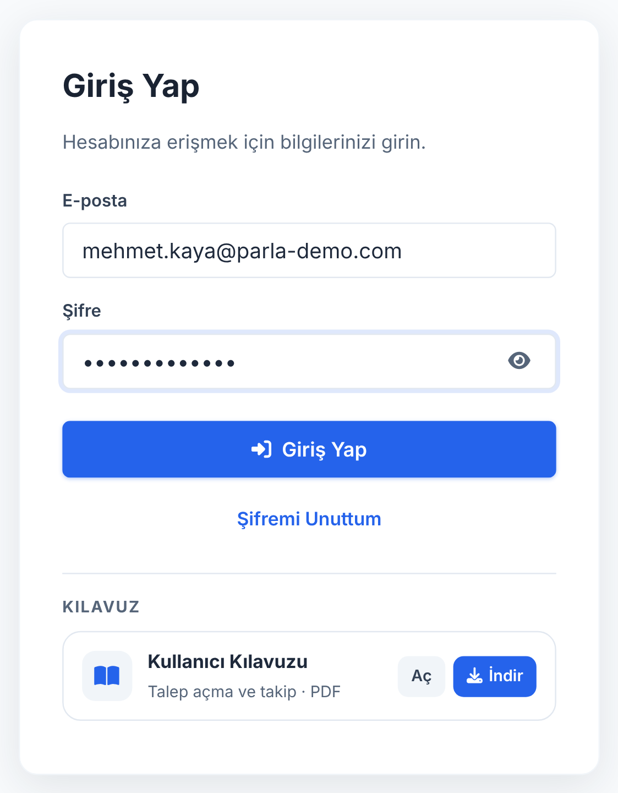
1234Personel hesabı Kullanıcılar sayfasından açılır (Bölüm 3); kendi kendinize kayıt olamazsınız. Hesap açıldığında adresinize şifre içermeyen bir davet e-postası gelir; şifrenizi e-postadaki bağlantıyla kendiniz belirlersiniz.
Pasif hesaplar giriş yapamaz (“Hesabınız aktif değil”); pasife alınan kullanıcının açık oturumu da sonraki sayfada kapanır.
Her sayfa soldaki menü, üstteki başlık çubuğu ve ortadaki çalışma alanından oluşur. Menünün altında adınız, rolünüz, Şifre Değiştir ve Çıkış Yap bulunur.
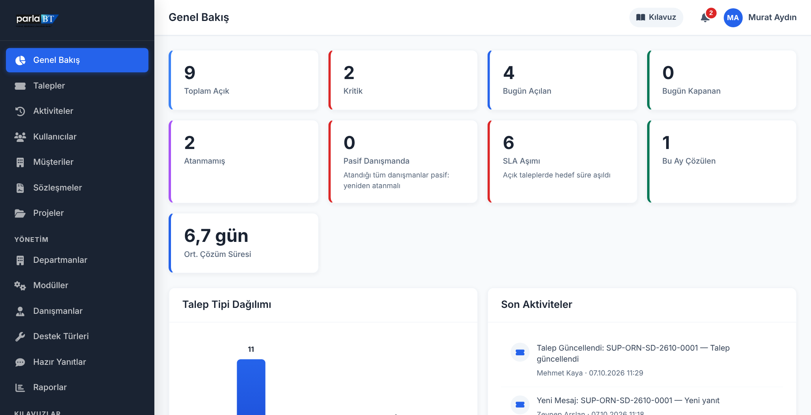
12345678| Menü öğesi | Ne işe yarar? | Bölüm |
|---|---|---|
| Genel Bakış · Talepler | Özet kartlar ve iş yükü · tüm taleplerin listesi ve ayrıntısı. | 1.4 · 2 |
| Aktiviteler | Değişmez denetim günlüğü; e-posta hataları da burada. | 5.2 |
| Kullanıcılar Süper AdminDestek Atayıcı | Müşteri ve personel kullanıcı hesapları (davet, onarım, pasife alma). | 3.2 |
| Müşteriler · Sözleşmeler · Projeler | Firma, sözleşme ve proje kayıtları. | 3.1 · 4 |
| Yönetim: Departmanlar, Modüller, Danışmanlar, Destek Türleri, Hazır Yanıtlar, Raporlar | Tanım listeleri, danışman kayıtları, hazır yanıt şablonları ve raporlar. | 3.3 · 4.3 · 5.1 |
| Kılavuzlar | Sistem Adminleri ve Kullanıcı kılavuzu PDF'leri (aç / indir). Dar ekranlarda menü sol üstteki düğmeden açılır ve tablolar kart görünümüne geçer. | — |
Kartlar tüm talepler üzerinden hesaplanır (yalnızca sizin taleplerinizle sınırlı değildir).
| Kart | Neyi sayar? |
|---|---|
| Toplam Açık · Kritik | Çözüldü/Kapandı olmayan tüm talepler (Kapanış Onayı ve Müşteri Bekleniyor dahil) · bunların içinde önceliği Kritik olanlar. |
| Bugün Açılan · Bugün Kapanan | Bugün oluşturulan · bugün kapanan talepler. |
| Atanmamış · Pasif Danışmanda | Açık ve henüz danışman atanmamış talepler · atandığı tüm danışmanlar pasif olan (sahipsiz) açık talepler: yeniden atanmalıdır. |
| SLA Aşımı | İlk yanıt veya çözüm hedefinden biri aşılmış açık talepler (aşım damgası kalıcıdır; öncelik düşürmek veya duraklama aşımı silmez; Bölüm 2.7). |
| Bu Ay Çözülen · Ort. Çözüm Süresi | Çözüm zamanı bu aya düşen Çözüldü/Kapandı talepler · oluşturma ile çözüm (kapanış onayına ilk geçiş ya da kapanış) arasındaki ortalama süre; 6,7 gün gibi virgüllü gösterilir. Raporlar sayfası aynı tanımı kullanır. |
Kartların altında Danışman İş Yükü (aktif danışman başına açık talep, kritik talep ve toplam efor; yalnızca birincil danışman sayılır), E-posta Servisi ve Veri Bakımı kartları (Bölüm 6) ile en yeni 10 Atanmamış / Sahipsiz Talep bulunur.
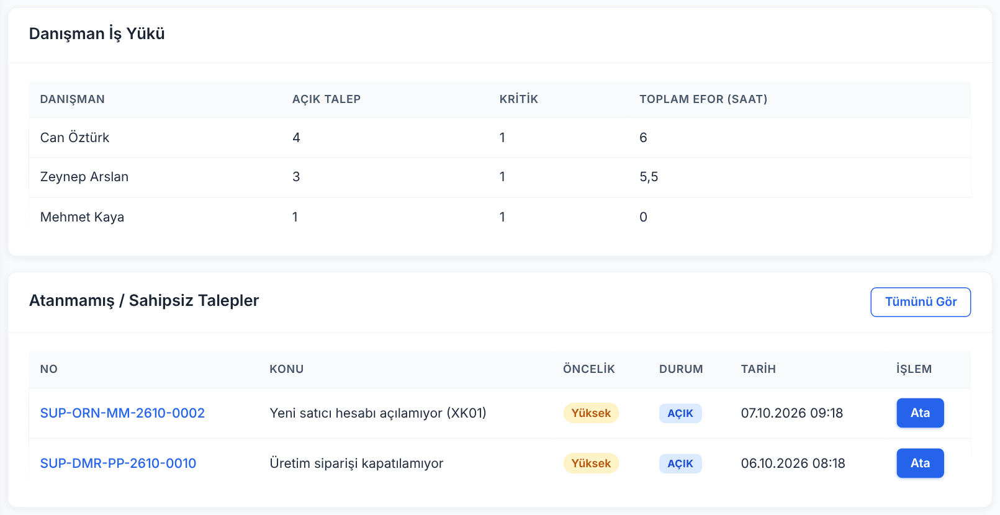
123Kimler yapabilirSüper AdminDestek AtayıcıProje YöneticisiDanışman
sayfası tüm firmaların tüm taleplerini listeler; her personel rolü (danışman dahil) hepsini görür. Sayfa başına 25 kayıt gösterilir (sayfa boyutu listenin üstünden değişir); sütun başlıklarına tıklayarak sıralayabilirsiniz. Talep numarası veya Düzenle ayrıntıyı açar. Dar ekranlarda (telefon, dikey tablet) tablo satırları kartlara dönüşür; her kart bir talebin alanlarını alt alta gösterir.
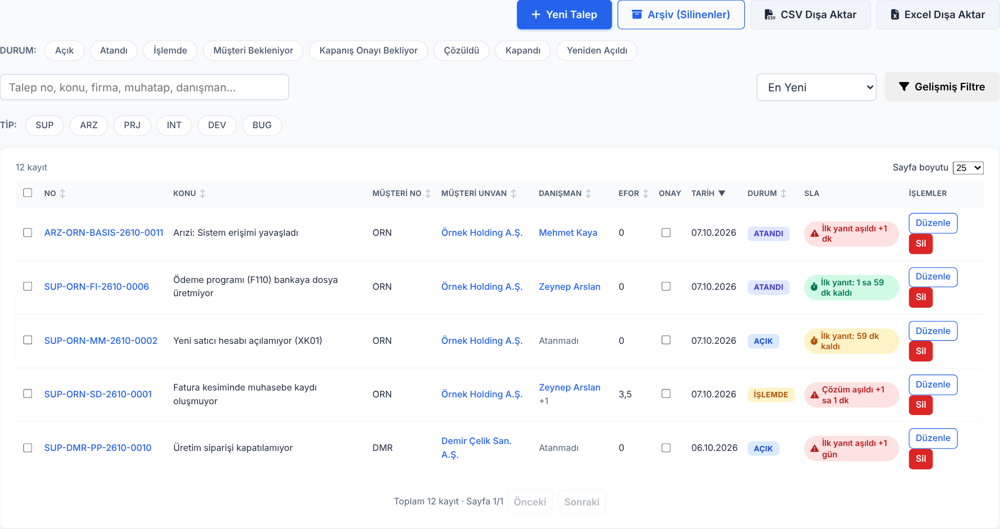
123456789101112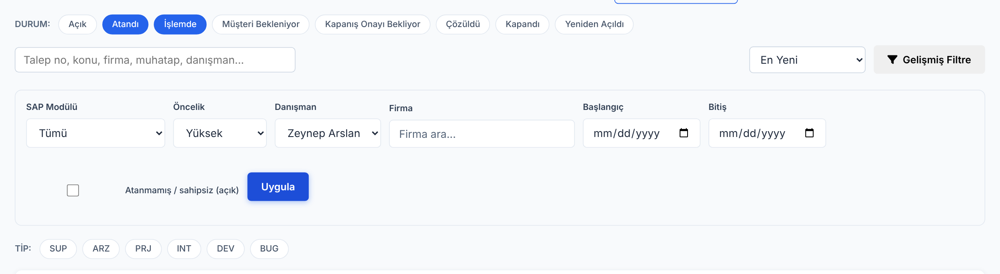
12345678=, +, -, @ bulunan metinler formül çalıştırmaması için nötrlenir. Saatler Türkçe biçimde (virgüllü, ör. 3,5) yazılır. Excel için tarayıcının dışarıdan bir kütüphane yükleyebilmesi gerekir; CSV her zaman çalışır.Kimler yapabilirSüper AdminDestek AtayıcıProje Yöneticisi
Listede birden çok talebi işaretlediğinizde listenin üstünde toplu işlem çubuğu belirir. Başlıktaki kutu görünen satırların tümünü işaretler; “Filtrelenen tüm N talebi seç” bağlantısı süzülmüş listenin tamamını seçer. Bir seferde en çok 300 talep işlenir (fazlası seçilirse ilk 300 alınır, uyarı çıkar). Danışman rolünde onay kutuları ve çubuk görünmez.
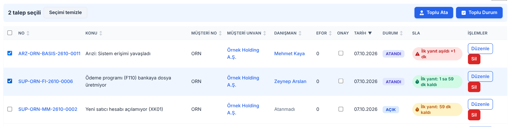
12345| İşlem | Nasıl çalışır? | Bildirim |
|---|---|---|
| Toplu Ata | Bir danışman seçilir. Birincil danışman olarak ata seçilirse mevcut danışmanlar ikincil kalır; Yerine ata seçilirse diğerleri kaldırılır. Pencerede kaç talebin etkileneceği önceden gösterilir; kapalı/çözülmüş talepler atlanır. | E-posta gönderilmez; talepler atanan danışmanın bildirim zilinde görünür. |
| Toplu Durum | Yeni durum seçilir ve en az 10 karakterlik not yazılır (her talebin geçmişine işlenir). İzinli geçiş matrisine uymayan talepler (ve zaten o durumda olanlar) atlanır; özet pencere atlananları ve başarısız olanları nedenleriyle listeler. | Yalnızca Çözüldü ve Kapandı olayları müşteriye e-postayla bildirilir (bir işlemde en çok 25 e-posta); diğer durumlar bildirimsiz uygulanır. |
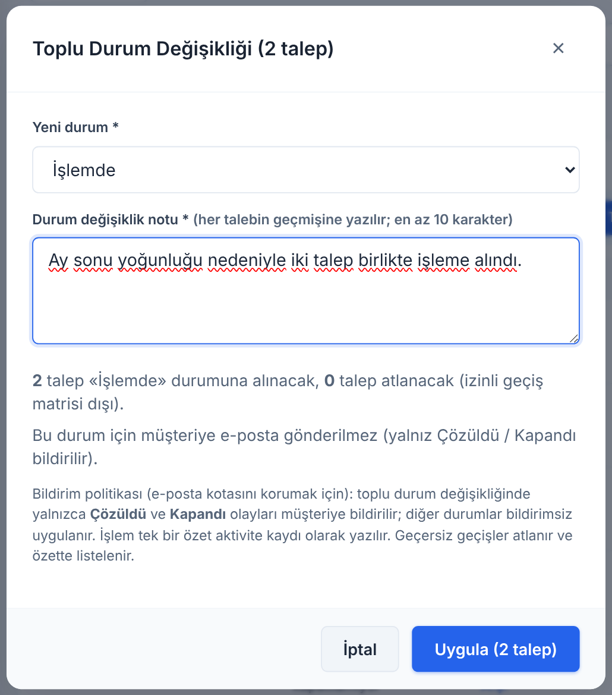
1234Toplu işlem tek bir özet aktivite kaydı olarak Aktiviteler'e yazılır; ayrıntılar her talebin Geçmiş sekmesindedir. Bir talep başka biri tarafından bu arada değiştirilmişse o talep için işlem başarısız sayılır ve özette görünür.
Kimler yapabilirSüper AdminDestek Atayıcı
Satırdaki Sil talebi gerçekten silmez, arşive alır (yumuşak silme): talep listelerden, panodan, raporlardan, zilden ve müşteri sayfalarından kalkar; mesaj, iç not, ek, geçmiş ve eforlar korunur. Arşiv (Silinenler) düğmesi arşivdeki talepleri listeler; Geri Yükle talebi eski haliyle geri getirir. Arşivdeki talep düzenlenemez, yanıtlanamaz.
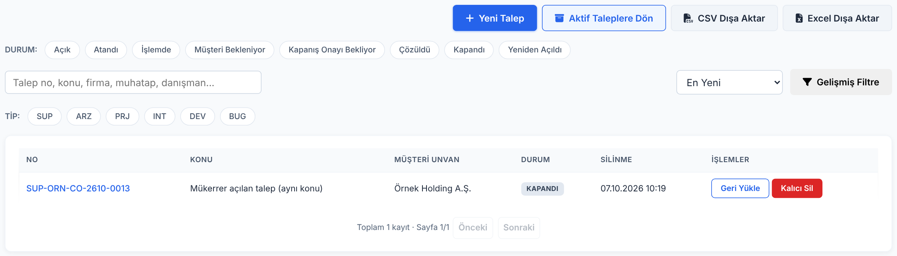
123Kalıcı Sil, talebi mesajları, iç notları, ekleri, geçmişi, atamaları ve eforlarıyla birlikte veritabanından siler ve geri alınamaz. Yalnızca Süper Admin yapabilir; kayıt Aktiviteler'e yazılır. Şüphede talebi arşivde bırakın.
Kimler yapabilirSüper AdminDestek AtayıcıProje YöneticisiDanışman
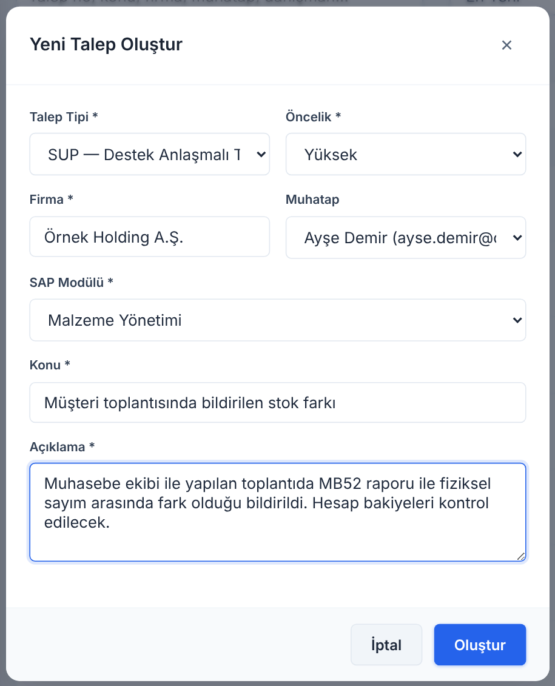
12345678TİP-MÜŞTERİ-MODÜL-YYAA-SIRA biçimindedir (sıra tip + müşteri kodu + ay bazında) ve sonradan değişmez.Ayrıntı sayfası şu bölümlerden oluşur: başlık ve künye, Admin Paneli (danışmanlar için Danışman Paneli) ile Müşteri Bilgileri, Atanan Danışmanlar, Efor Kayıtları, İç Notlar ve Mesajlar & Geçmiş.
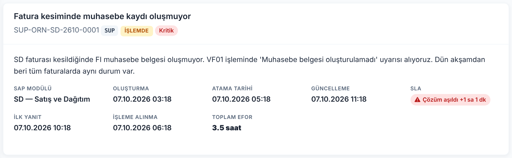
123456Künyede ayrıca İşleme Alınma, Çözüm (Kapanış Onayına Geçiş), Kapanış ve Son Yeniden Açılma zamanları (varsa) ve PRJ taleplerinde bağlı Proje görünür. Bu damgalar durum geçişlerinde otomatik yazılır; yeniden açılışta kapanış zamanı silinir ve yeni bir SLA penceresi başlar.
Kimler yapabilirSüper AdminDestek AtayıcıProje Yöneticisi
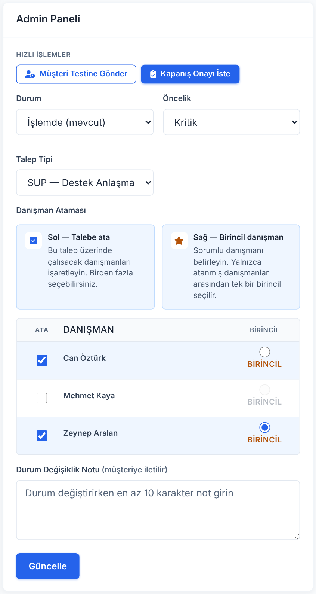
12345678Müşteri kapanışı reddederse (ya da Kapanış Onayı / Çözüldü iken yanıt yazarsa) talep Yeniden Açıldı'ya döner ve çalışma yeniden başlar. Durum değişimleri bir izinli geçiş matrisine bağlıdır: Açık → Atandı → İşlemde ↔ Müşteri Bekleniyor → Kapanış Onayı → Çözüldü → Kapandı; Kapandı → Yeniden Açıldı. Geri alma geçişleri (işleme geri al, çözümü geri al, atamayı kaldırıp Açık'a dönme) da tanımlıdır. Danışman yalnızca İşlemde, Müşteri Bekleniyor, Kapanış Onayı durumlarına geçebilir; kapatma ve yeniden açma yöneticilerdedir. Aşağıdaki tablo her durumda ne yapılacağını, Hızlı İşlem düğmesini ve müşteriye giden e-postayı özetler.
| Durum | Anlamı | Hızlı işlem → sonuç · e-posta |
|---|---|---|
| Açık | Talep geldi, danışman yok; “Atanmamış” sayılır. Atanmadan 4 saat geçerse atayıcılara hatırlatma gider (Bölüm 2.8). | Danışman atayın (Açık → Atandı otomatik). |
| Atandı | Danışman atandı. | İşleme Al → İşlemde (not sorulmaz) · “Durum güncellendi”. |
| İşlemde | Çalışma sürüyor. | Müşteri Testine Gönder → Müşteri Bekleniyor · “İncelemeniz bekleniyor”. Kapanış Onayı İste → Kapanış Onayı · “Kapanış onayı”. |
| Müşteri Bekleniyor | Müşteri yanıtı bekleniyor; SLA saati durur. Müşteri yanıtlayınca talep otomatik İşlemde olur. 3. ve 7. günde müşteriye hatırlatma gider (7. günde danışmana da). | İşleme Geri Al → İşlemde · “Durum güncellendi”. Kapanış Onayı İste de yapılabilir. |
| Kapanış Onayı Bekliyor | Çözüm tamamlandı; müşteri onayı bekleniyor, SLA saati durur. Müşteri onaylarsa Kapandı, reddederse ya da yanıt yazarsa Yeniden Açıldı olur. 3. günde hatırlatma, 10. günde otomatik kapanış. | İşleme Geri Al. yönetici roller Müşteri Adına Kapat → Kapandı · “Talep kapatıldı”. |
| Çözüldü | Durum listesinden verilir (İşlemde'den ya da Kapanış Onayı'ndan); çözüm zamanı bir kez kaydedilir. Müşteri bunu da onaylayıp kapatabilir; yanıt yazarsa talep yeniden açılır. | yönetici roller Kapat → Kapandı · “Talep kapatıldı”. Çözümü Geri Al → İşlemde. |
| Kapandı | Tamamlandı; müşteri kapanıştan sonra 14 gün içinde yeniden açabilir (bu sınır veritabanı kurallarında da zorlanır). Kapalı talebe kimse yazamaz; önce yeniden açılmalıdır. | yönetici roller Yeniden Aç → Yeniden Açıldı (kapanış zamanı silinir). |
| Yeniden Açıldı | Müşteri veya yönetici yeniden açtı (ya da müşteri yanıtı üzerine otomatik açıldı); birincil danışmana “Müşteri talebi yeniden açtı” bildirimi düşer. Yeni SLA penceresi başlar. | İşleme Al, Müşteri Testine Gönder ve Kapanış Onayı İste düğmeleri. |
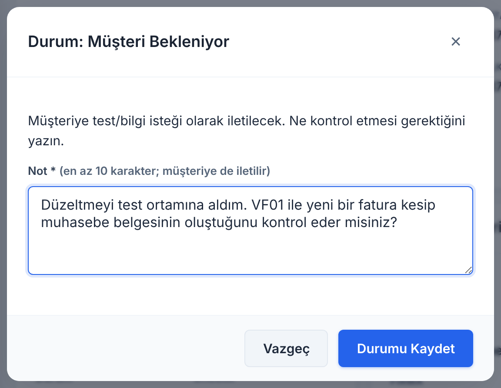
12Notu müşterinin okuyacağını varsayarak yazın: ne yapıldı, neyi kontrol etmeli, nereden bakmalı.
Müşteri Adına Kapat, müşterinin onayını beklemeden kapatır; yalnızca müşteri telefonla/e-postayla onayladıysa kullanın ve notta belirtin.
Bir talebe birden çok danışman atanabilir; biri birincil danışmandır: listelerde “Danışman” olarak görünür, iş yükü/performans tablolarında sayılır, bildirim zili uyarıları onun adına üretilir ve müşteriye giden “Talebinize danışman atandı” e-postası onun adını taşır.
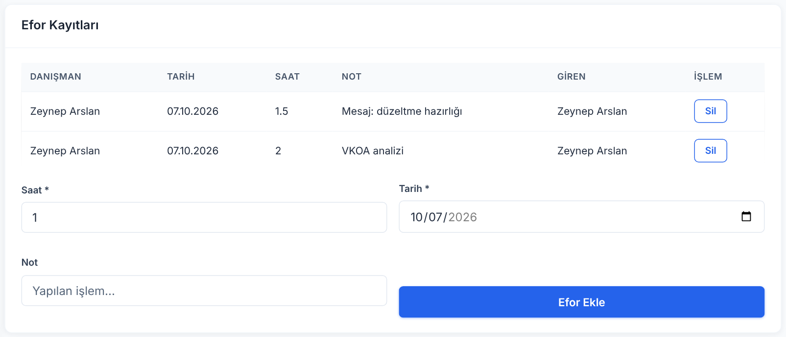
12345Mesajlar müşteriyle yazışmayı, İç Notlar yalnızca personelin gördüğü notları gösterir; müşteri iç notları ne arayüzde ne veritabanında okuyabilir. Yanıt kutusu yönetici rollerde her açık talepte, danışmanda yalnızca atandığı talepte görünür; Kapandı ve arşivdeki talepte kutu yoktur (önce yeniden açın / geri yükleyin).
{musteri_adi} (talep sahibi), {talep_no} ve {danisman} (siz) değişkenleri doldurularak kutuya eklenir ve göndermeden önce düzenlenebilir. Şablonları Bölüm 4.4'te yönetirsiniz.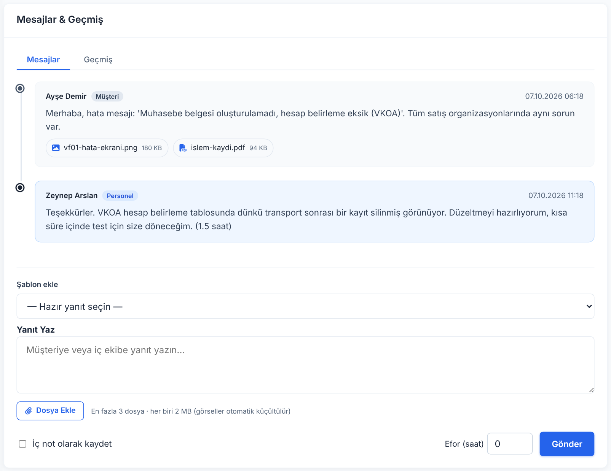
12345678910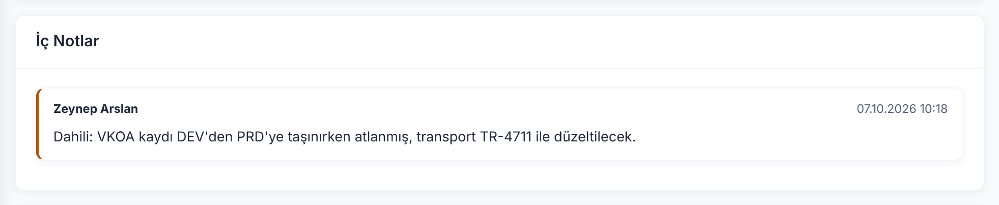
1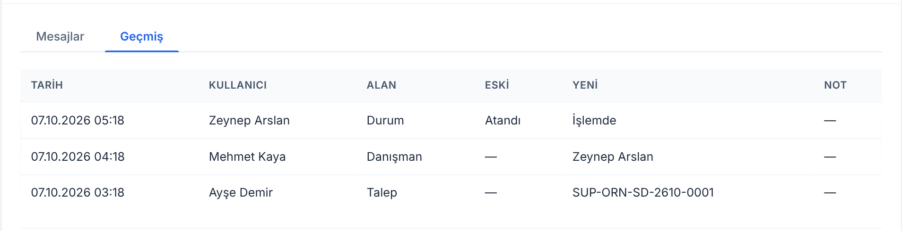
123Hedefler 7/24 takvim saati (mesai ve tatil ayrımı yok) olarak önceliğe göre hesaplanır ve yalnızca müşteri kaynaklı SUP, ARZ, BUG taleplerine uygulanır (PRJ, INT, DEV için “—”). Saat, talebin oluşturulduğu andan başlar; yeniden açılışta çözüm hedefi için yeni bir pencere başlar.
| Öncelik | İlk yanıt | Çözüm |
|---|---|---|
| Kritik | 1 saat | 8 saat |
| Yüksek | 4 saat | 24 saat |
| Orta | 8 saat | 72 saat |
| Düşük | 24 saat | 120 saat |
Sunucu tarafında her 30 dakikada bir çalışan zamanlanmış bir işlev, açık talepleri tarar. İşlev yalnızca sunucuya bir servis hesabı tanımlıysa çalışır (Bölüm 6.3); tanımlı değilse hiçbir şey yapmaz. Her olay talep başına bir kez üretilir; yeniden açılış, kayıtlı uyarıları geçersiz kılar. İşlemler Aktiviteler'e Sistem (otomatik) adıyla yazılır.
| Olay | Ne zaman? | Kime / ne olur? |
|---|---|---|
| SLA uyarısı | İlk yanıt veya çözüm hedef süresinin %80'i dolduğunda (duraklamadayken değil). | Atanmış danışmanlar (atanan yoksa destek kutusu). |
| SLA aşımı | Hedef aşıldığında. | Atanmış danışmanlar + destek kutusu. Aşım damgası talebe yazılır. Çok eski (24 saatten eski) aşımlar yeni alarm üretmez, yalnızca damgalanır. |
| Atanmamış talep | Açık/Yeniden Açıldı talep 4 saat atanmadan kaldığında. | Destek kutusu + atama yetkisi olan aktif personel (Süper Admin, Destek Atayıcı, PM). |
| Müşteri yanıtı hatırlatması | Müşteri Bekleniyor'da 3. ve 7. gün. | Müşteriye “Yanıtınızı bekliyoruz”; 7. günde danışmana da. |
| Kapanış onayı hatırlatması | Kapanış Onayı Bekliyor'da 3. gün. | Müşteriye “Kapanış onayınızı bekliyoruz” (kalan gün belirtilir). |
| Otomatik kapanış | Kapanış Onayı Bekliyor'da 10. gün, müşteriden yanıt gelmediyse. | Talep Kapandı olur; müşteriye ve danışmana bilgi e-postası gider. Müşteri 14 gün içinde yeniden açabilir. |
Otomasyon e-postaları günlük e-posta kotasını paylaşır (Bölüm 6.1). Kota dolarken düşük öncelikli bildirimler (uyarı, hatırlatma) ertesi sabah günlük özet e-postasına ertelenir; otomatik kapanış ve SLA aşımı önceliklidir. Otomasyonu ilk kez etkinleştirmeden önce 10 günden uzun süredir Kapanış Onayı Bekliyor'da duran talepleri gözden geçirin: bu talepler ilk çalışmada kapatılır ve müşterilere e-posta gider.
Kimler yapabilirDanışman
Danışman tüm talepleri görür ama yalnızca kendisine atanmış talepte yazar; yazma yetkisi hem arayüzde hem veritabanı kurallarında atamaya bağlıdır (atama, danışman kaydının kullanıcı hesabıyla eşleşmesine dayanır). Atanmamış talepte yalnızca bilgi kutusu görünür; yanıt, iç not, durum ve efor işlemleri kapalıdır. Atanmış talepte panel Hızlı İşlemleri gösterir.
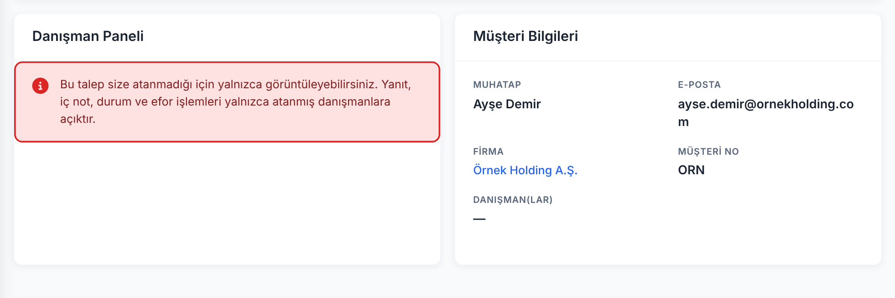
1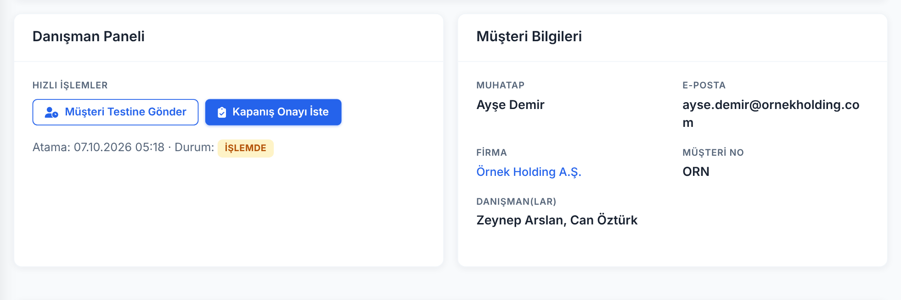
1E-postaları işlemi yapanın tarayıcısı portalın e-posta servisine gönderir (Netlify Function → Resend). Alıcıları ve içeriği sunucu belirler (istemciden gelen adres/metin güvenilmez): metin, veritabanındaki mesaj veya geçmiş kaydından alınır. İşlemi yapan kişiye e-posta gitmez. Tüm bildirim e-postalarında “bu adrese yanıt vermeyin, portaldan yazın” notu bulunur; e-postayı yanıtlamak talebe eklenmez.
| Olay | Konu | Alıcı |
|---|---|---|
| Müşteri talep açar | Talebiniz alındı · Yeni destek talebi | Müşteri + destek kutusu (info@parlabilgiteknolojileri.net) |
| Personel talep açar (muhatap seçili) | Talebiniz alındı | Yalnızca muhatap |
| Danışman atanır | Size atanan talep | Yeni atanan danışman(lar) |
| Birincil danışman değişir | Talebinize danışman atandı | Müşteri (atama başına tek e-posta) |
| Danışman talepten çıkarılır | Talep sizden alındı | Çıkarılan danışman |
| Öncelik Kritik'e yükselir | Kritik öncelik | Atanmış danışmanlar (yoksa destek kutusu) |
| Durum değişir (İşleme Al/Geri Al, Yeniden Aç, Çözüldü, Kapandı) | Durum güncellendi · Talep çözüldü · Talep kapatıldı | Müşteri + atanmış danışmanlar |
| Müşteri Testine Gönder · Kapanış Onayı İste | İncelemeniz bekleniyor · Kapanış onayı | Yalnızca müşteri |
| Personel herkese açık yanıt yazar | Yeni yanıt | Yalnızca talep sahibi |
| Müşteri yanıt yazar | Yeni yanıt | Destek kutusu + atanmış danışmanlar |
| Müşteri kapanışı onaylar / yeniden açar (ya da yanıtla otomatik açılır) | Talep kapatıldı · Talep tekrar açıldı | Destek kutusu + atanmış danışmanlar |
| Otomasyon (Bölüm 2.8) | SLA uyarısı · SLA aşıldı · Atanmamış talep · Yanıtınızı/Kapanış onayınızı bekliyoruz · Talep otomatik kapatıldı | Bölüm 2.8 tablosundaki alıcılar |
| İç not, öncelik değişikliği (Kritik hariç), efor, toplu atama | — | E-posta gitmez |
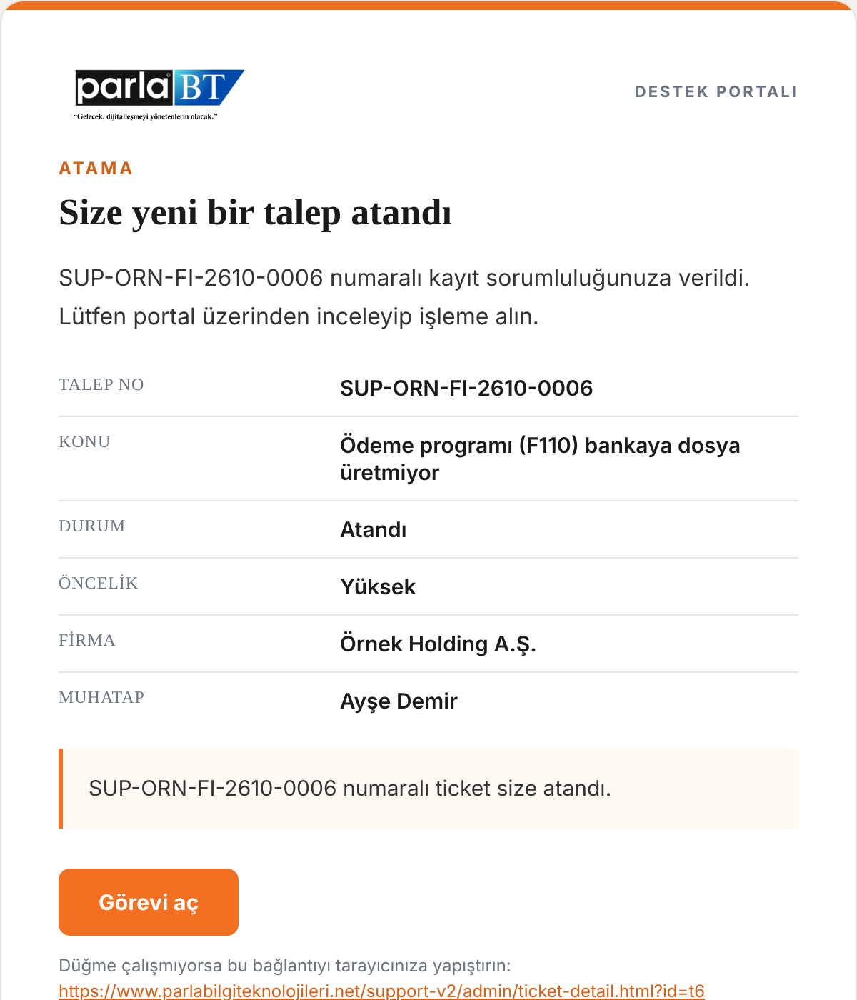
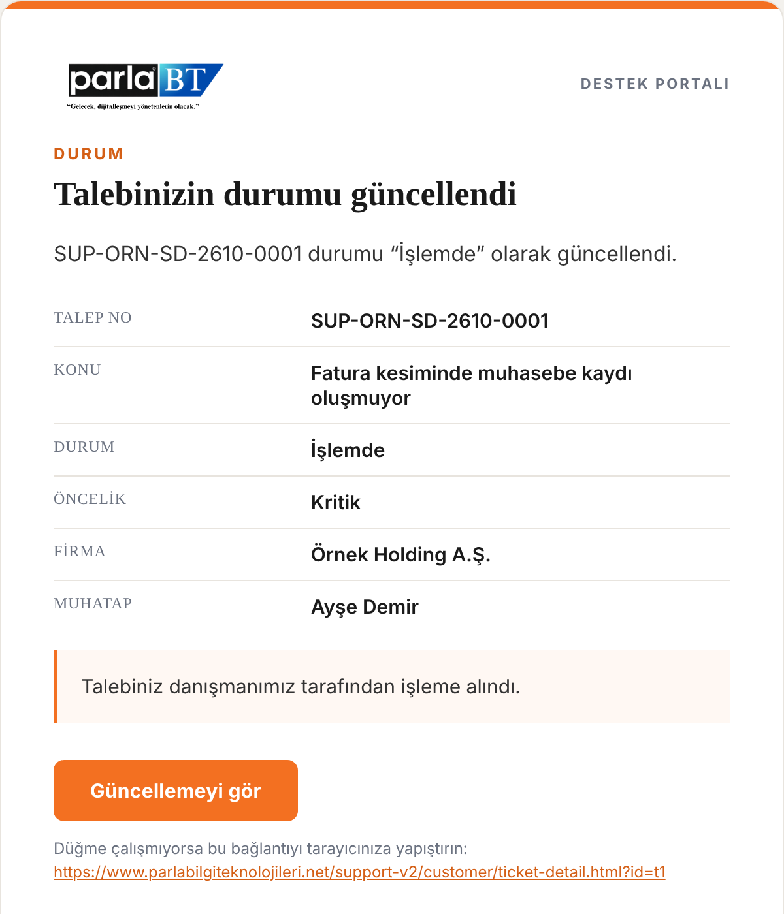
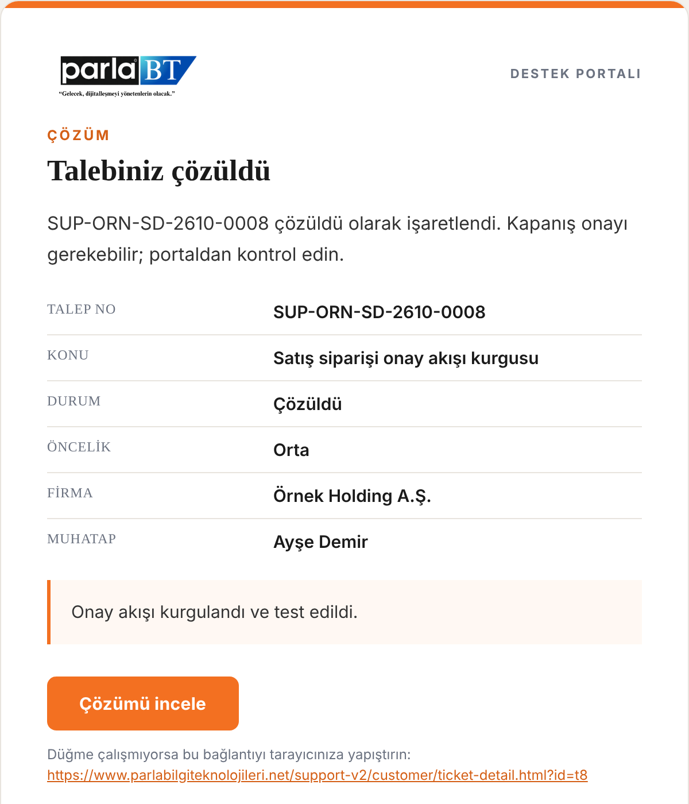
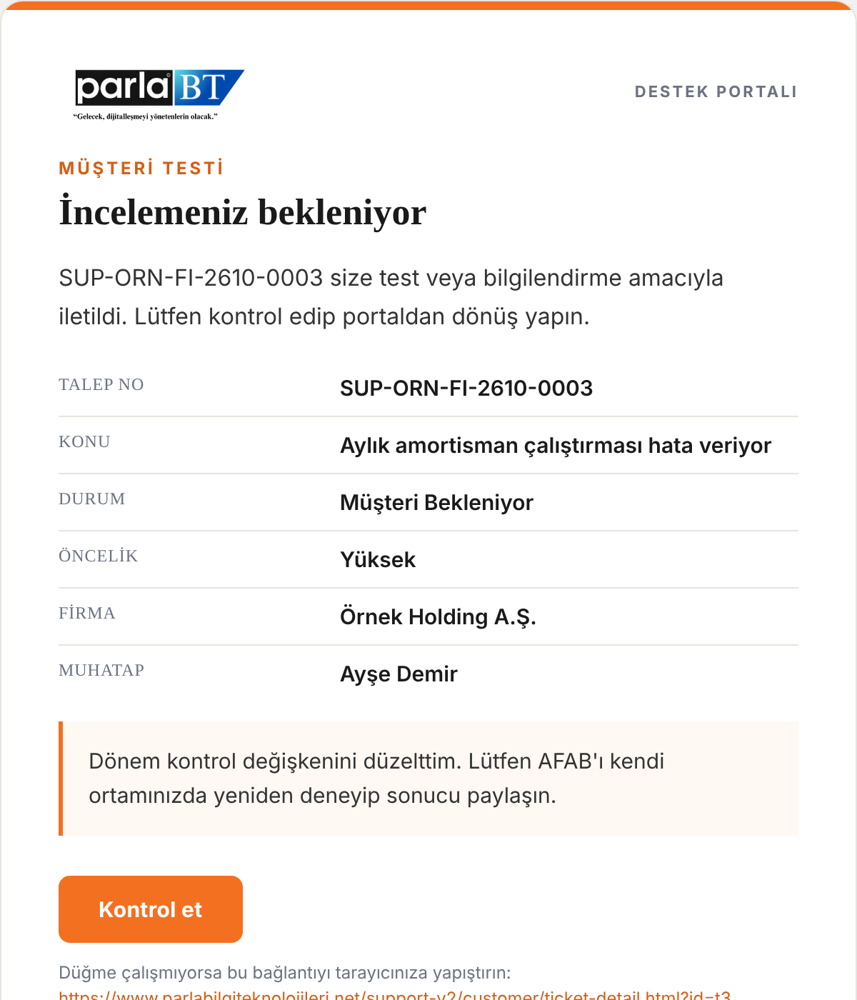
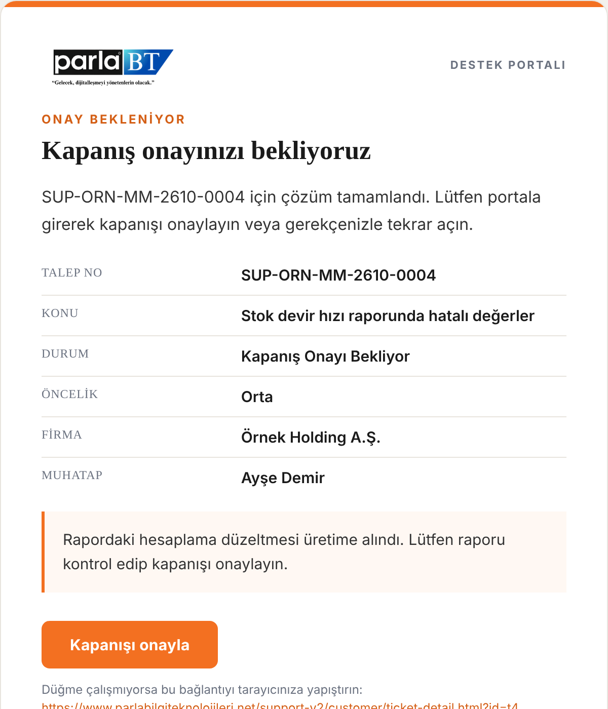
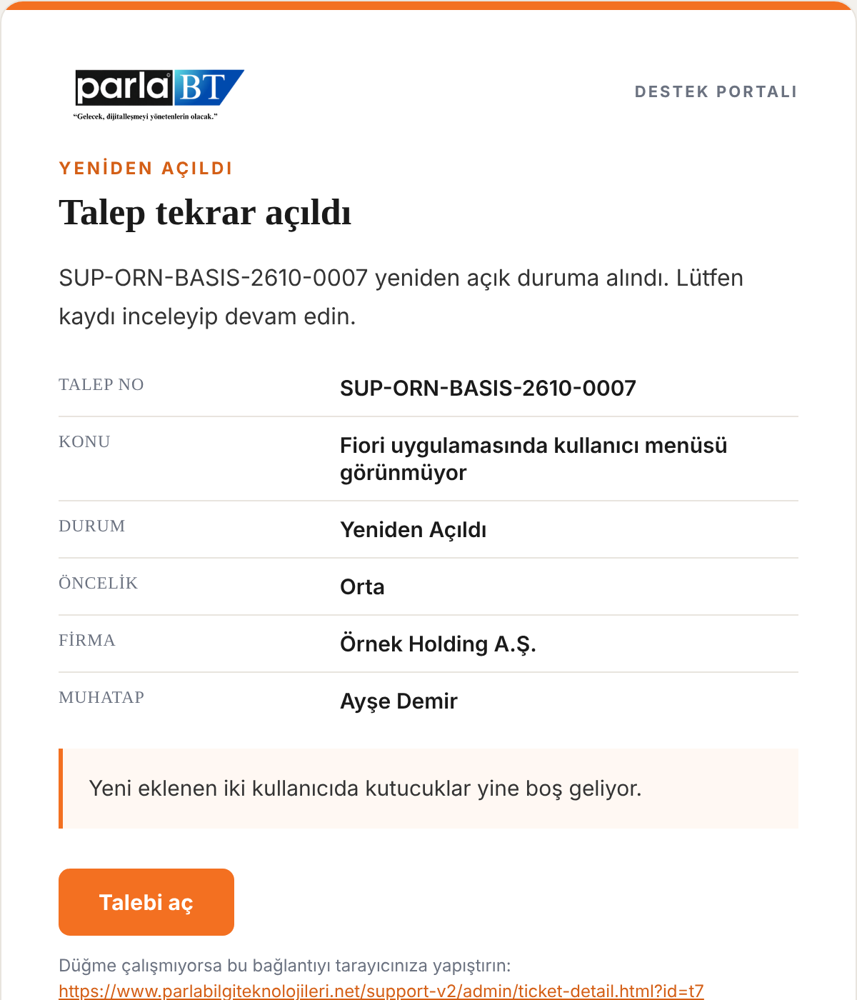
Gönderim hataları sessiz geçmez: ekranda uyarı çıkar ve Aktiviteler'e “E-posta Gönderilemedi” yazılır. Geçici hatalarda e-posta tarayıcı kuyruğuna alınıp yeniden denenir (Bölüm 6.2).
Kimler yapabilirSüper AdminDestek Atayıcı
sayfasını tüm personel okur; firma oluşturma, düzenleme ve pasife alma yalnızca Süper Admin ve Destek Atayıcı'dadır (diğer rollerde bu düğmeler hiç gösterilmez; sayfalar salt okunurdur). Müşteri tipi CUS (destek anlaşmalı) veya ARC (arızi müşteri)'dir; müşteri tipi, kullanıcıların açabileceği talep tiplerini belirler (CUS → SUP/BUG, ARC → ARZ/BUG).
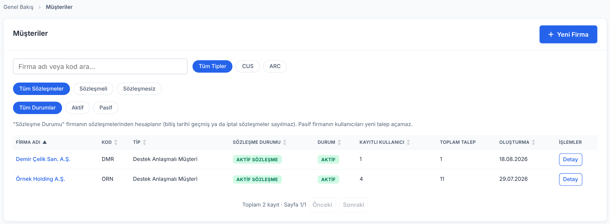
12345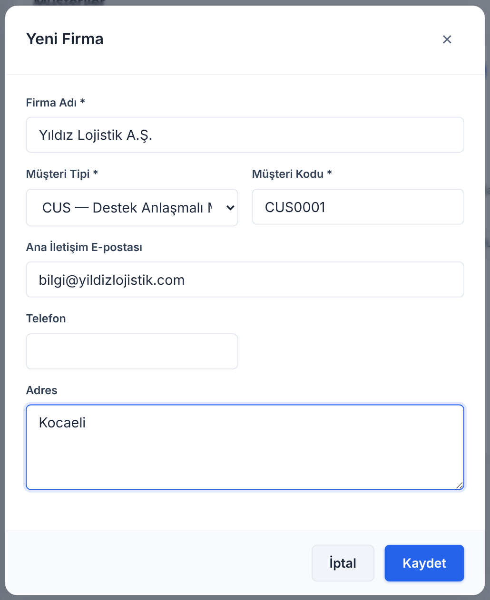
12345CUS0001), benzersiz; talep numarasının ikinci bölümüdür.Firma adı veya kodu sonradan değiştirilirse, o firmaya bağlı kullanıcı, talep, sözleşme ve proje kayıtlarındaki ad/kod kopyaları da otomatik eşitlenir (işlem sonunda kaç kayıt güncellendiği bildirilir). Mevcut talep numaraları değişmez. Kopyaların bir kısmı güncellenemezse uyarı çıkar; düzenlemeyi yeniden kaydedin.
Listedeki Sözleşmeli rozeti elle işaretlenmez; firmanın Sözleşmeler kayıtlarından (etkin durumuyla) hesaplanır. Sözleşme eklemek veya bitirmek rozeti kendiliğinden günceller.
Firma sayfası iletişim bilgilerini, özet kartlarını (Aktif Kullanıcı, Açık Talep, Toplam Talep, Aktif Sözleşme) ve sekmeleri (Talepler, Efor, Kullanıcılar, Sözleşmeler, Projeler) toplar. Kullanıcılar sekmesi ve kullanıcı sayıları yalnızca Süper Admin / Destek Atayıcı'ya görünür; Sözleşmeler sekmesindeki Değer (₺) sütunu da öyle. Efor sekmesi seçilen ayın efor kayıtlarını talep bazında özetler ve Excel olarak indirir. Pasife Al, firmayı Sözleşme/Proje/Talep formlarındaki seçicilerden kaldırır ve firma kullanıcılarının yeni talep açmasını engeller; kullanıcılar giriş yapmaya ve mevcut taleplerini görmeye devam eder, açık talepler etkilenmez.
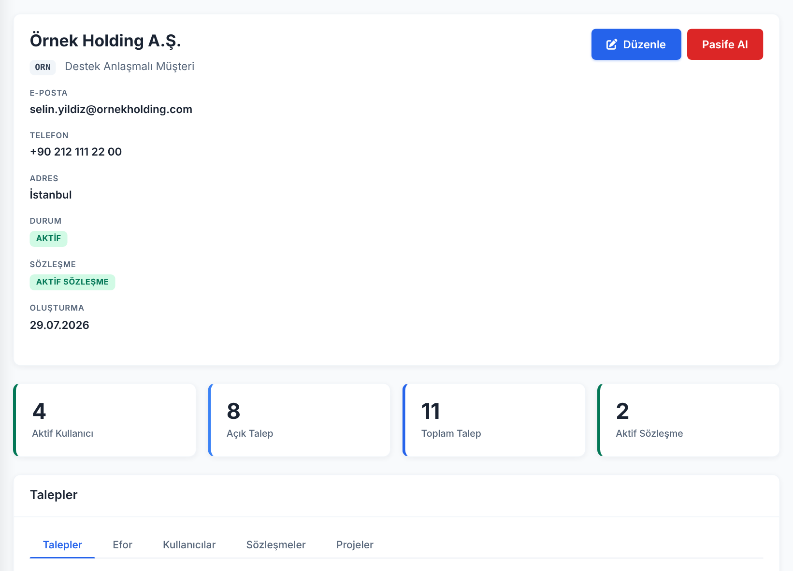
12345Kimler yapabilirSüper AdminDestek Atayıcı
müşteri ve personel hesaplarını listeler. Sayfayı yalnızca Süper Admin ve Destek Atayıcı açabilir; Firma Yöneticisi dahil müşteri rolleri kullanıcı yönetemez. Hesap işlemleri (oluşturma, onarma, pasife alma, şifre bağlantısı) bir sunucu işlevi üzerinden yapılır; işlev yoksa sayfa uyarıyla eski, tarayıcı tabanlı akışa döner (aşağıda).
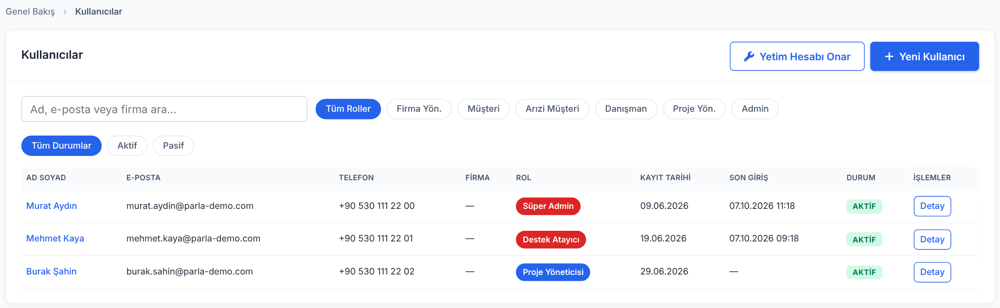
123456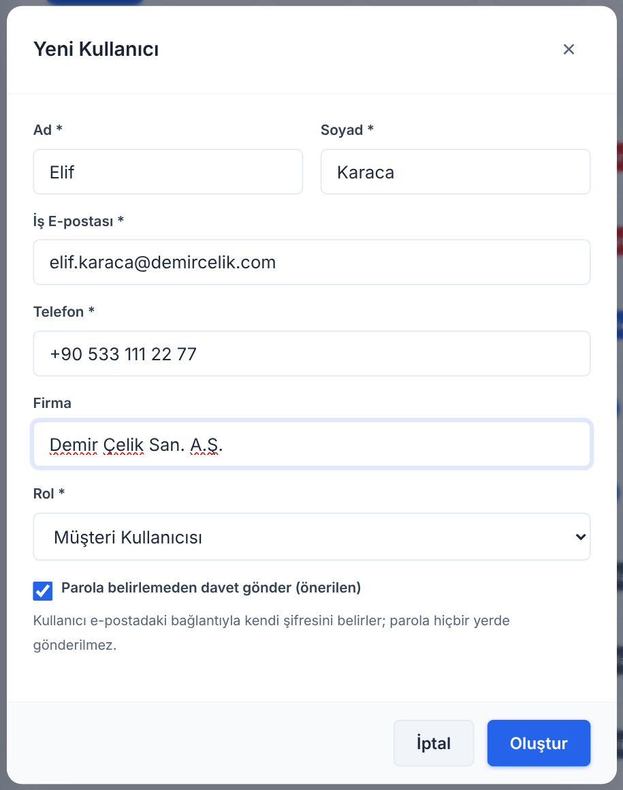
1234567Roller: Müşteri Kullanıcısı yalnızca kendi taleplerini görür; Arızi Müşteri sözleşmesiz firma kullanıcısıdır; Firma Yöneticisi firmasının tüm taleplerini görür ve yanıtlar (kullanıcı yönetemez); personel rolleri Bölüm 1.1'dedir. Destek Atayıcı yalnızca müşteri rollerini, Danışman'ı ve Proje Yöneticisi'ni verebilir.
Süper Admin ve Destek Atayıcı rollerini yalnızca Süper Admin atayabilir; bu rollerin hesaplarını da yalnızca Süper Admin yönetir. Bu roller seçilince Yüksek Yetki Uyarısı görünür.
E-posta zaten kayıtlıysa form uyarır. Aynı e-posta hem Danışmanlar kaydında hem müşteri hesabında kullanılamaz.
Sunucu işlevi Firebase hesabını ve portal profilini tek işlemde açar; profil yazılamazsa hesabı geri alır (yarım kayıt kalmaz). Oturumunuz bozulmaz.
Kullanıcıya şifre içermeyen bir e-posta gider; düğme, kullanıcının kendi şifresini belirlediği sayfayı açar (bağlantı kısa süreli ve tek kullanımlıktır). Personel rolü (Danışman, Proje Yöneticisi) için aynı e-postalı Danışmanlar kaydı varsa otomatik eşleştirilir; yoksa sarı uyarı çıkar.
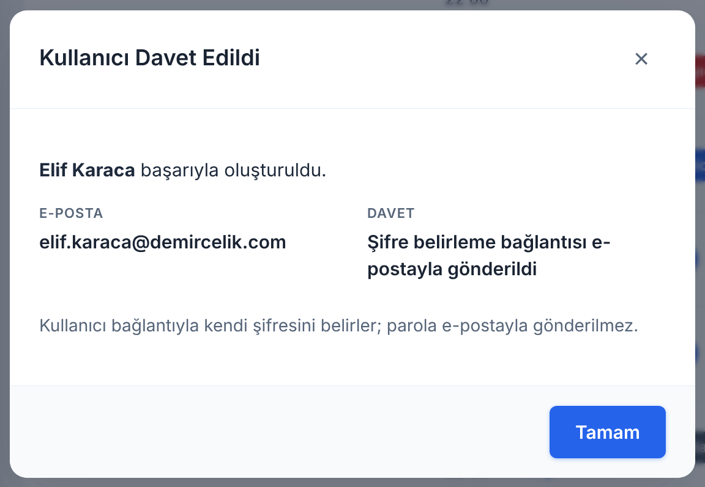
123Davet e-postası gönderilemezse pencerede şifre belirleme bağlantısı gösterilir; Bağlantıyı Kopyala ile kullanıcıya yalnızca güvenli bir kanaldan iletin (kısa süre geçerli, tek kullanımlık). Hiçbir yerde şifre gönderilmez veya saklanmaz.
Sunucu işlevi için servis hesabı tanımlı değilse (Bölüm 6.3) davet seçeneği gizlenir ve formda “Eski yöntem kullanılıyor” uyarısı çıkar: hesap tarayıcıdan, otomatik üretilen geçici şifreyle açılır, kullanıcı ilk girişte şifresini değiştirmek zorunda kalır ve geçici şifre yalnızca sonuç penceresinde bir kez görünür (Panoya Kopyala / E-posta Gönder). Bu yedek akış kalıcı çözüm değildir; sunucu işlevini etkinleştirin.
Kullanıcı oluşturma yarıda kesilirse (ağ kopması, sekme kapanması) Firebase'de hesabı olan ama portalda profili bulunmayan bir “yetim hesap” kalabilir; aynı e-postayla yeniden oluşturmak “e-posta zaten kayıtlı” hatası verir. Yetim Hesabı Onar bu hesabı kurtarır: e-posta alanına yazmaya başlayınca bulunan yetim hesaplar listelenir; ad, soyad, telefon, rol (ve müşteri rollerinde firma) girilip Onar'a basılır. Hesap yeniden oluşturulmaz, mevcut hesaba profil yazılır ve kullanıcıya şifre belirleme bağlantısı gönderilir.
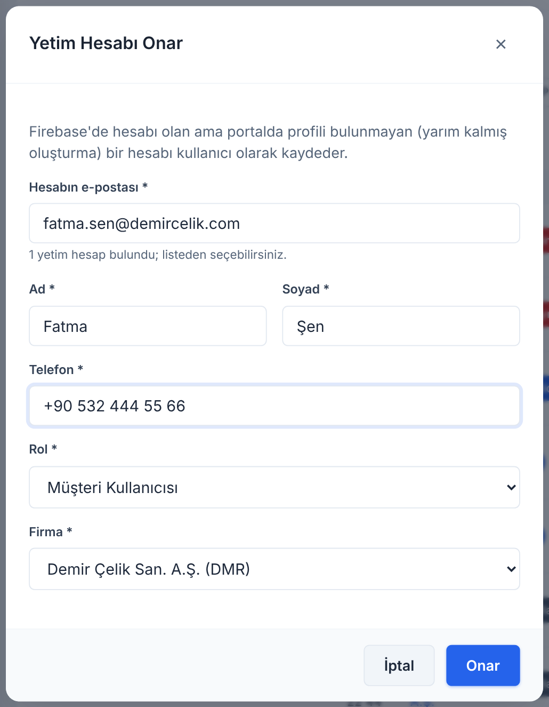
1234Sunucu işlevi yoksa pencere, hesabın oluşturulurken verilen bilinen parolasını da ister (hesaba bu parolayla girilerek kimliği alınır). Onardıktan sonra kullanıcı mevcut parolasıyla girer ve ilk girişte şifresini değiştirir.
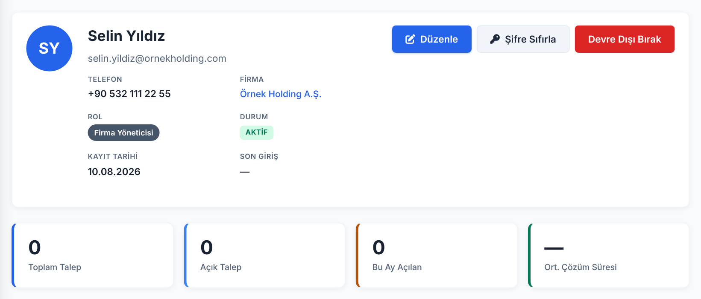
12345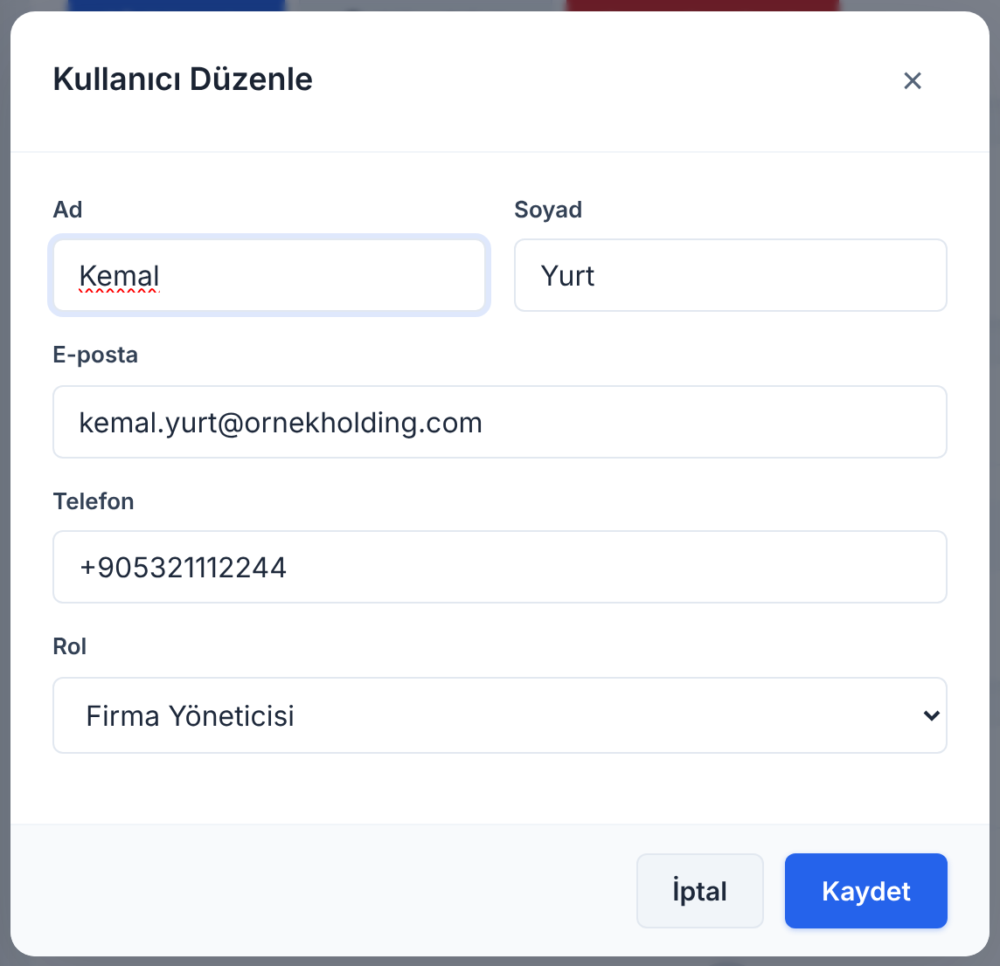
1234Kimler yapabilirSüper AdminDestek Atayıcı
sayfası taleplere atanabilen personelin kayıt defteridir. Kullanıcı hesabından ayrıdır: kayıt açmak giriş yetkisi vermez; ikisi önce e-posta adresiyle, sonra bir kimlik bağıyla eşleşir. Danışmanın bir talepte yazabilmesi bu bağa dayanır. Açık talep ve efor sütunları yalnızca talebin birincil danışmanına sayılır.
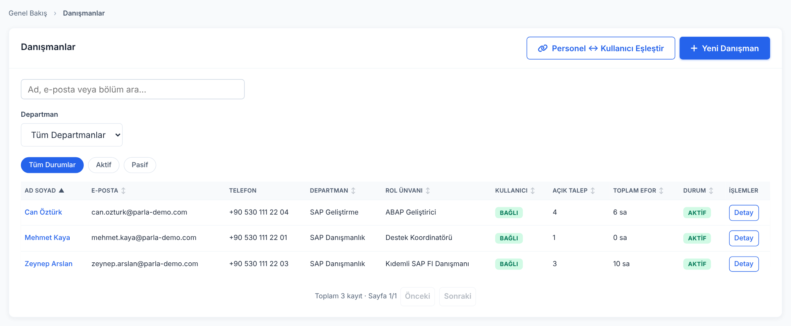
1234567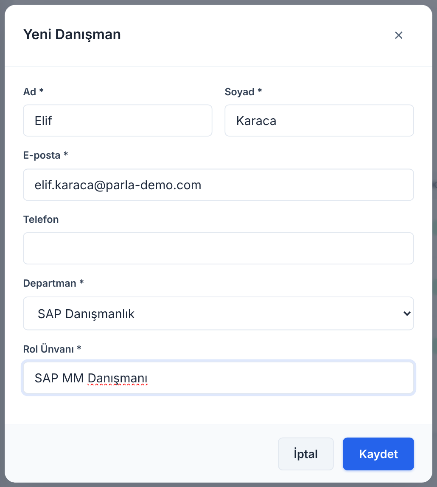
1234Zorunlu alanlar: Ad, Soyad, E-posta, Departman, Rol Ünvanı. Telefon isteğe bağlıdır. Kayıt, aynı e-postalı kullanıcı varsa onunla otomatik eşleştirilir; yoksa kullanıcı oluşturup Personel ↔ Kullanıcı Eşleştir aracını çalıştırın (eşleşmemiş danışman talepte işlem yapamaz ve atama sırasında uyarı çıkar).
Danışman Düzenle (Detay sayfasından) ad veya e-posta değişince atama/talep/proje üzerindeki kopyalar da güncellenir. Pasife Al danışmanı yeni atama listelerinden ve iş yükü tablosundan kaldırır; mevcut atamaları korur (bu talepler Genel Bakış'ta Pasif Danışmanda sayılır ve yeniden atanmalıdır). Girişini engellemek için kullanıcı hesabını ayrıca pasife alın.
Kimler yapabilirSüper AdminDestek Atayıcı
sayfası firmaların destek sözleşmelerini izler. Listeyi tüm personel görür; ekleme ve düzenleme Süper Admin ve Destek Atayıcı'dadır. Bitiş tarihine göre kalan gün hesaplanır; 30 günün altı kırmızı görünür. Sütunlara tıklayarak sıralayabilirsiniz.
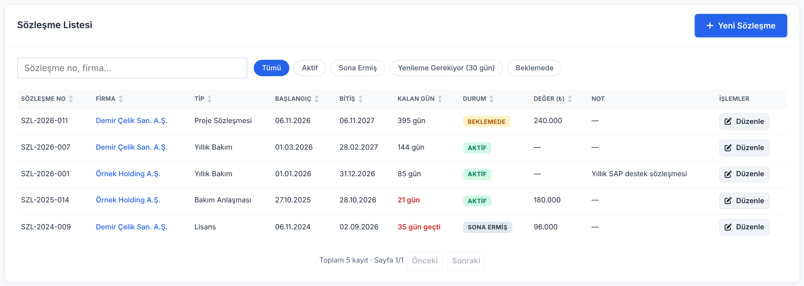
123456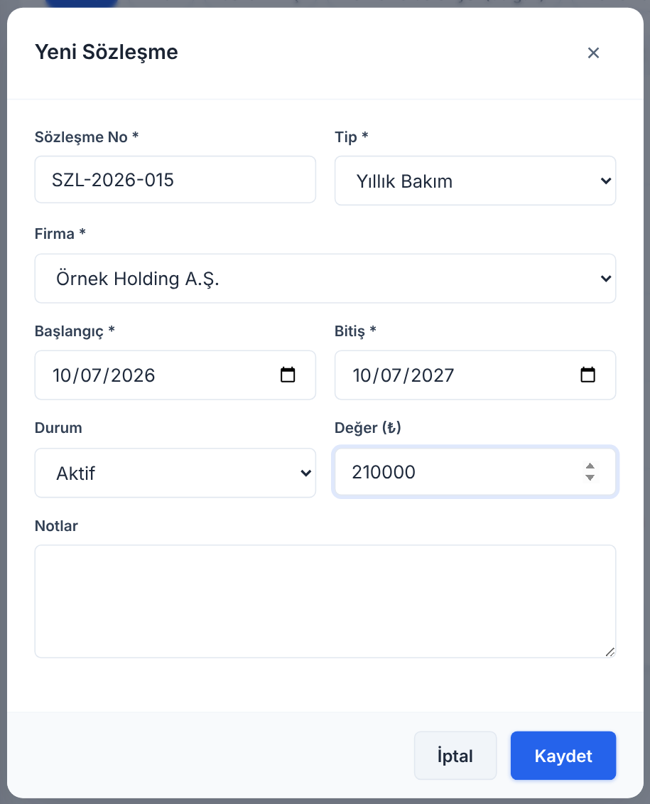
1234567| Etkin durum | Davranış |
|---|---|
| Aktif | Başlamış ve bitmemiş sözleşme. Bitiş tarihi geçmişse liste otomatik Sona Ermiş gösterir (kayıt değişmez). |
| Beklemede | Kayıtlı Beklemede ya da başlangıcı gelecekte olan sözleşme. |
| İptal | Tarihten bağımsız olduğu gibi görünür. |
| Yenileme Gerekiyor | Aktif, bitişine 0–30 gün kalmış. |
Etkin durum tek bir hesaptan gelir: Sözleşmeler, firma ayrıntısı ve Müşteriler listesindeki “Sözleşmeli” rozeti aynı sonucu gösterir. Sözleşme kayıtları izleme ve raporlama amaçlıdır: talep açmayı veya SLA'yı otomatik etkilemez (talep tipi kilidi firma tipine, yani CUS/ARC'ye bağlıdır).
Değer (₺) alanı ve sütunu yalnızca Süper Admin ve Destek Atayıcı'ya görünür; bedel, sözleşme kaydından ayrı bir düğümde saklanır ve Proje Yöneticisi / Danışman bunu veritabanı düzeyinde de okuyamaz.
Kimler yapabilirSüper AdminDestek AtayıcıProje Yöneticisi
sayfası proje kayıtlarını tutar; listeyi tüm personel görür. Kod (PRJ0001 …) otomatik önerilir ve değişmez. Formda: Proje Adı *, Firma * (aktif firmalar), Proje Yöneticisi (Danışmanlar kayıtlarından), Durum (Planlama, Aktif, Beklemede, Tamamlandı, İptal), tarihler, açıklama ve Atanan Danışman. Pasife alınmış bir firmanın projesi de düzenlenebilir.
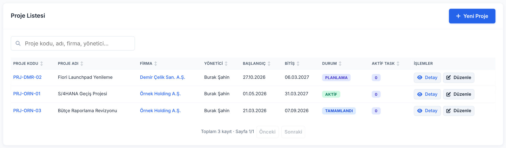
12345PRJ talepleri projeye bağlanır: talebi oluştururken (Bölüm 2.2) PRJ tipi seçilince Proje seçimi zorunludur; mevcut bir talebin tipini PRJ yaparken ya da projesini değiştirirken Admin Paneli'ndeki Proje alanı kullanılır (değişiklik Geçmiş'e yazılır; tip PRJ dışına çevrilirse bağ temizlenir). Aktif Task sayacı ve proje ayrıntısındaki Proje Taskları (PRJ) listesi bu bağdan beslenir.
Kimler yapabilirSüper Admin
Bu üç Yönetim sayfası tanım listeleridir. Listeleri tüm personel görür, değiştirme yalnızca Süper Admin'dedir; her değişiklik Aktiviteler'e yazılır.
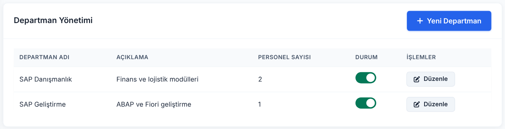
123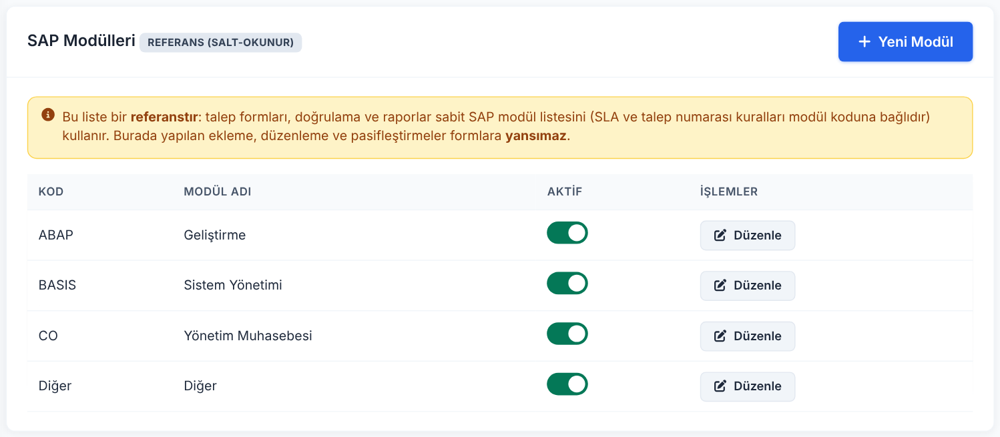
12345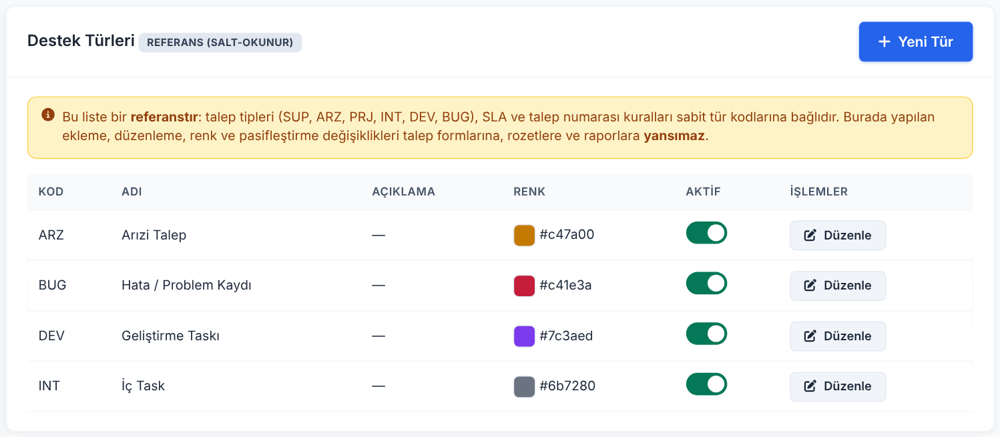
12345Modül ve Destek Türü listeleri artık yalnızca referanstır (sayfalarda “Referans (salt-okunur)” rozeti ve uyarı kutusu vardır): talep formları, doğrulama, SLA, talep numarası ve raporlar sabit kod listesini (assets/js/support-v2/ticket-utils.js) kullanır. Bu sayfalarda ekleme, düzenleme, renk veya pasifleştirme formlara, rozetlere ve raporlara yansımaz; yeni modül/tür için geliştirme tarafında değişiklik gerekir. Departman listesi ise canlıdır ve danışman formlarını besler.
Kimler yapabilirSüper AdminDestek Atayıcı
sayfası, personelin yanıt kutusunda Şablon ekle listesinden kullandığı metinleri tutar. Şablonları tüm personel okur ve kullanır; ekleme, düzenleme, silme ve aktif/pasif yapma yalnızca Süper Admin ve Destek Atayıcı'dadır. Yalnızca aktif şablonlar yanıt kutusunda listelenir.
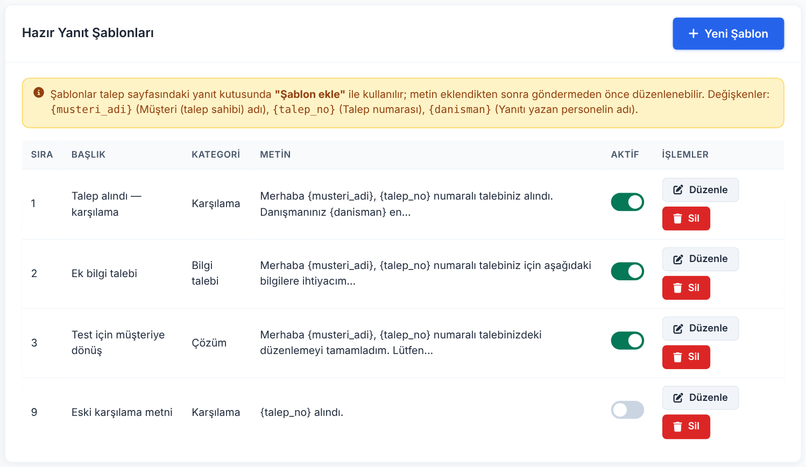
1234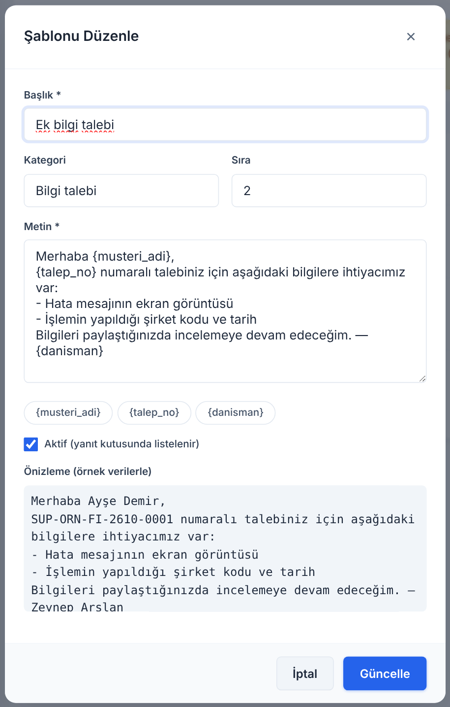
123456| Değişken | Yanıt kutusunda yerine geçen |
|---|---|
{musteri_adi} | Talep sahibinin adı soyadı. |
{talep_no} | Talep numarası. |
{danisman} | Yanıtı yazan personelin (sizin) adı. |
Şablon metni yanıt kutusuna eklendikten sonra düzenlenebilir; göndermeden önce müşteriye özel bilgileri tamamlayın. Eklenen metin düz metindir, HTML olarak yorumlanmaz.
Kimler yapabilirSüper AdminDestek AtayıcıProje YöneticisiDanışman
sayfası seçilen tarih aralığı için dokuz kart üretir. Veri sayfa açılırken bir kez okunur; yeni kayıtlar için sayfayı yenileyin. Arşivdeki (silinmiş) talepler ve eforları raporlara girmez. Aralık Bu Hafta (pazartesiden bugüne), Bu Ay, Son 3 Ay veya Özel olabilir ve Uygula ile çalışır.
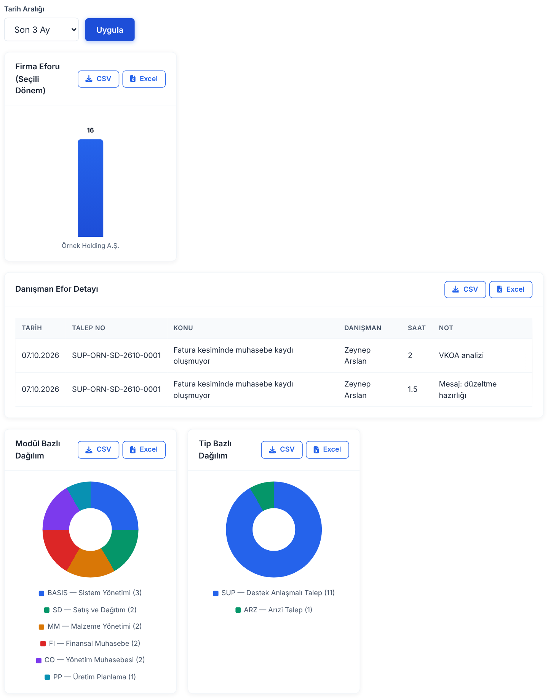
123456| Kart | Neyi gösterir? | Tarih ölçütü |
|---|---|---|
| Aylık Firma Eforu · Danışman Efor Detayı | Firma başına efor saati (ilk 15) · tek tek efor kayıtları. | Efor iş tarihi |
| Modül · Tip Bazlı Dağılım | Taleplerin SAP modülüne / talep tipine göre dağılımı. | Oluşturma tarihi |
| Danışman Performansı | Birincil danışman başına atanan, çözülen (Çözüldü/Kapandı), ortalama çözüm süresi (saat). | Oluşturma tarihi |
| En Aktif Firmalar (Top 10) · Arızi Müşteri İstatistikleri | En çok talep açan firmalar · ARZ talepleri, açık ARZ, ARC firma sayısı, ortalama çözüm. | Oluşturma tarihi |
| Aylık Trend (6 Ay) · Çözüm Süreleri (Öncelik) | Son altı ayın talep sayısı · öncelik başına ortalama çözüm (saat). | Trend: her zaman son 6 ay |
Çözüm süresi pano ve raporlarda aynı tanımla hesaplanır: talebin oluşturulmasından çözüme kadar geçen süre; çözüm anı, talebin Kapanış Onayı Bekliyor / Çözüldü durumuna ilk geçtiği an (yoksa kapanış zamanı)dır. Müşterinin Kapanış Onayı'ndan kapattığı talepler de böylece hesaba girer. Süre takvim süresidir (SLA duraklaması düşülmez); sayılar Türkçe biçimle, virgüllü gösterilir. Excel dışa aktarma tarayıcının internetten bir kütüphane yüklemesini gerektirir; CSV her zaman çalışır.
Kimler yapabilirSüper AdminDestek AtayıcıProje YöneticisiDanışman
sayfası portaldaki önemli işlemlerin değişmez denetim günlüğüdür: kayıtlar eklenir; düzenlenemez veya silinemez (veritabanı kuralı, Süper Admin dahil). Tablo ve Zaman Çizelgesi görünümleri arasında geçilebilir; satırlardaki ticket, kullanıcı ve firma adları ilgili sayfaya bağlanır.
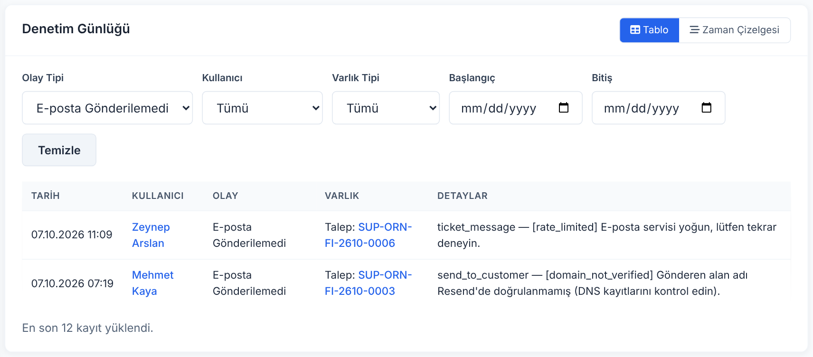
1234567olay — [hata kodu] açıklama.Geçici hatalarda e-posta kuyruktan sonradan yeniden denenir; ilk başarısızlık yine de günlüğe yazılır. E-posta Gönderilemedi kaydı e-postanın hiç ulaşmadığı anlamına gelmeyebilir; şüphede alıcıdan teyit isteyin.
Kimler yapabilirSüper AdminDestek AtayıcıProje YöneticisiDanışman
Başlık çubuğundaki zil size ait uyarıları toplar. Bildirimler saklanmaz; hedefli sorgularla (sizin danışman kaydınıza atanmış açık talepler, atayıcı rolünde ayrıca danışmansız açık talepler) türetilir; tüm talep koleksiyonu indirilmez. Zil görünür sekmede yaklaşık 5 dakikada bir yenilenir; sekme arka plandayken yoklama durur, sekmeye dönünce (son yenilemeden bu yana süre dolduysa) yenilenir. “Size ait”, birincil ya da ikincil danışmanı siz olan talepler demektir (eşleştirme danışman kaydınızın kullanıcı hesabıyla eşleşmesine dayanır).
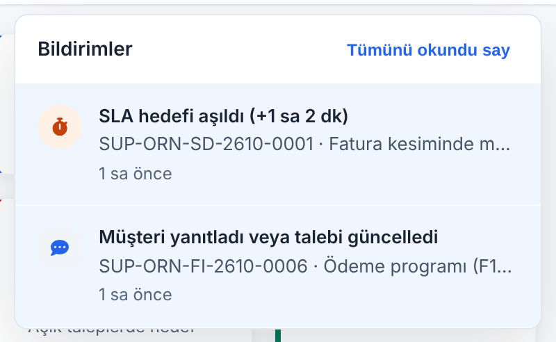
123Panelde ve rozette en çok 50 bildirim gösterilir (fazlası “+N” olarak belirtilir). “Okundu” bilgisi bu tarayıcıda tutulur (başka bilgisayarda yeniden görünebilir); ilk kullanımda son 48 saat dikkate alınır.
Danışmanlar “Atama bekliyor” almaz. SLA uyarısı yalnızca saat işlerken üretilir: Müşteri Bekleniyor / Kapanış Onayı sırasında (SLA duraklatıldığında) zilde uyarı çıkmaz; Genel Bakış'taki aşım sayacı ise kalıcı aşım damgasını saymaya devam eder.
| Bildirim | Kime? | Ne zaman kaybolur? |
|---|---|---|
| Atama bekliyor | Süper AdminDestek AtayıcıProje Yöneticisi | Danışman atanınca veya durum değişince. |
| Müşteri talebi yeniden açtı | Atanmış danışman | Talep Yeniden Açıldı'dan çıkınca. |
| SLA hedefi aşıldı (+süre) | Atanmış danışman | Talep kapanınca veya SLA duraklatılınca. |
| Müşteri yanıtladı veya talebi güncelledi · Başka bir danışman talebi güncelledi | Atanmış danışman | Talebi açınca veya Tümünü okundu say ile. |
Kimler yapabilirSüper AdminDestek Atayıcı
Portalın tüm bildirim e-postaları aynı hattan geçer. İşlemi yapan personelin tarayıcısı, oturum açmış kullanıcının Firebase kimlik jetonuyla portalın /api/send-email adresine istek gönderir; Netlify Function jetonu doğrular, alıcıları ve içeriği veritabanından kendisi oluşturur (istemciden gelen adres, metin ve bağlantı güvenilmez; yalnızca mesaj/geçmiş kaydının kimliği gönderilir) ve Resend aracılığıyla gönderir. E-postalardaki bağlantıların kökü sunucuda sabittir (SITE_URL).
Genel Bakış'taki E-posta Servisi kartı (Süper Admin ve Destek Atayıcı) hattın sağlığını gösterir. Sayfa açılınca servis yayında mı ve anahtar tanımlı mı diye kendiliğinden sorgular; iki düğme vardır:
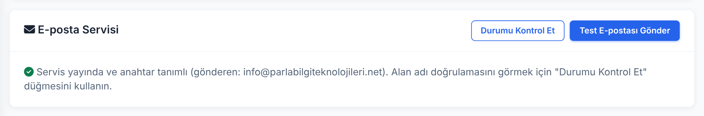
12parlabilgiteknolojileri.net alan adının doğrulanma durumunu sorgular.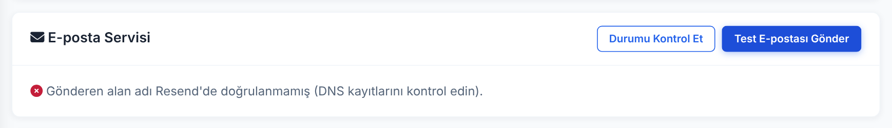
| Kart ne diyor? | Anlamı → yapılacak |
|---|---|
| “API anahtarı yalnızca gönderim yetkili; alan adı durumu okunamıyor (normal)” | Kısıtlı anahtar kullanılıyor; durum sorgulanamaz. Normaldir → yalnızca Test E-postası ile doğrulayın. |
| “Gönderen alan adı doğrulanmamış” | Resend'de SPF/DKIM eksik/bekliyor → DNS kayıtlarını tamamlayın. |
| “E-posta servisine ulaşılamıyor …” | /api/send-email 404 veriyor → siteyi Netlify'a dağıtın (aşağıdaki liste). |
| “… RESEND_API_KEY tanımlı değil” | Ortam değişkeni eksik → Netlify'da ekleyip yeniden dağıtın. |
Resend ücretsiz planı yaklaşık günde 100 e-posta verir ve bu kota portal bildirimleri, Firebase kimlik e-postaları (şifre sıfırlama) ve site form e-postalarıyla ortaktır. Sunucu bu yüzden iki koruma uygular: (1) kullanıcı ve talep başına hız sınırı (müşteri dakikada 5, personel dakikada 30 istek gibi); (2) günlük kota: yumuşak sınır 80 aşılınca düşük öncelikli bildirimler (hatırlatma, SLA %80 uyarısı) gönderilmez, her sabah 06:00 (UTC) tek bir günlük özet e-postasıyla destek kutusuna iletilir; sert sınır 95 aşılınca yüksek öncelikliler de reddedilir (daily_quota) ve özete düşer. Genel Bakış'taki E-posta Servisi kartı bugünkü kullanımı gösterir. Sınırlar ortam değişkenleriyle ayarlanır (aşağıda).
| Değişken (Netlify → Site configuration → Environment variables) | Anlamı | Zorunlu mu? |
|---|---|---|
RESEND_API_KEY | Resend API anahtarı. Gönderim için yeterlidir; Durumu Kontrol Et'in alan adını okuyabilmesi için tam yetkili anahtar gerekir. | Zorunlu |
FIREBASE_SERVICE_ACCOUNT | Firebase servis hesabı JSON'unun tek satırlık hâli. Sunucu tarafı kullanıcı yönetimini (davet, onarım, pasife alma), zamanlanmış otomasyonu ve yedeği etkinleştirir; tanımlı değilse bunlar kapalı kalır (Bölüm 6.3). Yalnızca Netlify ortam değişkeni (ve yedek için GitHub secret) olarak girilir, depoya yazılmaz. | Önerilir |
CONTACT_EMAIL | Destek kutusu adresi (varsayılan info@parlabilgiteknolojileri.net); sunucu “@support” sembolik alıcısını bu adrese çözer. | İsteğe bağlı |
SITE_URL | E-postalardaki bağlantıların kökü (https). Varsayılan: https://www.parlabilgiteknolojileri.net. İstemciden gelen bağlantı yok sayılır. | İsteğe bağlı |
ALLOWED_ORIGINS | Virgülle ayrılmış ek site alan adları (tam host). Varsayılan izinliler: parlabilgiteknolojileri.net, www., parla-bt-web.web.app, parla-bt-web.firebaseapp.com. *.netlify.app için joker yoktur: deploy önizlemesi denenecekse tam host yazılır. localhost yalnızca üretim dışı çalışmada (yerel geliştirme, testler) kabul edilir. | İsteğe bağlı |
DAILY_EMAIL_SOFT_LIMIT · DAILY_EMAIL_HARD_LIMIT | Günlük kota yumuşak/sert sınırları (varsayılan 80 / 95). | İsteğe bağlı |
AUTOMATION_EMAIL_DAILY_MAX · AUTOMATION_MAX_EMAILS_PER_RUN | Otomasyonun günlük e-posta payı (varsayılan 40; otomatik kapanış bildirimleri muaf) ve tek çalıştırmada en çok e-posta (varsayılan 15). | İsteğe bağlı |
BACKUP_RETENTION_DAYS | Netlify Blobs yedeklerinin saklanma süresi (varsayılan 14 gün). | İsteğe bağlı |
FIREBASE_PROJECT_ID · FIREBASE_DATABASE_URL | Varsayılan değerleri parla-bt-web projesini gösterir; yalnızca farklı bir Firebase projesi kullanılırsa girilir. | İsteğe bağlı |
Netlify, netlify.toml uyarınca /api/send-email ve /api/admin-users isteklerini netlify/functions altındaki işlevlere yönlendirir. Site yalnızca başka bir yerde çalışıyorsa site-config.js içindeki EMAIL_API_URL / ADMIN_USERS_API_URL değerlerine Netlify sitesinin tam adresini yazın.
Ortam değişkeni eklemek tek başına yetmez; yeniden dağıtım gerekir (her dağıtım build kredisi harcar; değişiklikleri tek seferde yapın). Kontrol için tarayıcıda /api/send-email adresini açın: "configured": true görmelisiniz.
parlabilgiteknolojileri.net alan adını Resend'e ekleyin, istenen SPF ve DKIM DNS kayıtlarını girin ve durum verified olunca Genel Bakış'ta Durumu Kontrol Et ile teyit edin. Gönderen her zaman Parla BT Destek <info@parlabilgiteknolojileri.net>'dir; bildirim e-postalarına yanıt vermek talebe eklenmez.
Test E-postası Gönder'e basın; iletiyi gelen kutunuzda (ve spam'de) görün.
Kullanıcının giriş sayfasındaki Şifremi Unuttum ile başlattığı e-postayı Firebase gönderir; kodla yönetilmez. Firebase Console → Authentication → Templates bölümünde SMTP'yi Resend'e (smtp.resend.com, 587, kullanıcı resend) yönlendirin ve eylem bağlantısını https://www.parlabilgiteknolojileri.net/support-v2/auth-action.html yapın; aksi halde iletiler Firebase'in varsayılan göndericisinden gider ve spam'e düşebilir. (Yönetici düğmeleriyle gönderilen davet ve şifre belirleme bağlantıları ise Netlify işlevi üzerinden Resend'den gider.)
Gönderim hatası ekranda uyarı olarak görünür ve Aktiviteler'e E-posta Gönderilemedi yazılır (Bölüm 5.2). Hatanın türüne göre iki yol izlenir:
Kuyruk kullanıcının tarayıcısına bağlıdır: tarayıcı kapanır veya yerel veriler silinirse bekleyen e-postalar kaybolur ve başka cihazda görünmez. Sunucu tarafında kalıcı bir e-posta kuyruğu yoktur; kritik bildirimler (otomatik kapanış, SLA aşımı) sunucudaki otomasyondan gider ve kota dolarsa günlük özete düşer.
| Hata kodu | Ekranda görünen | Ne yapmalı? |
|---|---|---|
not_configured | E-posta servisi yapılandırılmamış (RESEND_API_KEY). | Anahtarı ekleyip yeniden dağıtın. |
invalid_api_key · 401 | Resend API anahtarı geçersiz veya yetkisiz. | Anahtarı yenileyin. |
domain_not_verified | Gönderen alan adı Resend'de doğrulanmamış. | DNS kayıtlarını tamamlayın. |
rate_limited · rate_limited_user · rate_limited_ticket · 429 | Çok sık istek / e-posta servisi yoğun. | Geçicidir; kuyruk yeniden dener. |
daily_quota · 429 | Günlük e-posta kotası doldu. | Düşük öncelikli bildirimler günlük özete eklenir; ertesi gün kota yenilenir. Sık oluyorsa ücretli plana geçin. |
validation_error · bad_recipients | E-posta içeriği veya alıcı kabul edilmedi. | Alıcı adresini kontrol edin. |
recipient_not_allowed · recipient_not_registered · inactive_recipient | Alıcı bu talebin tarafı değil / kayıtlı değil / hesabı pasif. | Talep sahibinin e-postasını / atamayı / hesap durumunu kontrol edin. |
status_mismatch · priority_mismatch | Talep durumu/önceliği bu bildirimle uyuşmuyor. | Talebi yenileyin; durum bu arada değişmiş olabilir. |
origin_denied | İstek kaynağı kabul edilmedi. | Site alan adını ALLOWED_ORIGINS'e ekleyin. |
no_session · no_token · bad_token · bad_claims | Oturum bulunamadı veya süresi doldu; yeniden giriş yapın. | Çıkış yapıp tekrar girin. |
endpoint_missing · 404 | E-posta servisi bu sitede bulunamadı. | Netlify Function'ı dağıtın. |
Kimler yapabilirSüper Admin
Firebase servis hesabı (FIREBASE_SERVICE_ACCOUNT) tanımlandığında üç özellik etkinleşir; tanımlı değilse üçü de zarifçe kapalı kalır (portal çalışmaya devam eder):
| Özellik | Ne yapar? | Tanımlı değilse |
|---|---|---|
Kullanıcı yönetimi işlevi (/api/admin-users) | Kullanıcıyı davetle oluşturur (Auth hesabı + profil tek işlemde, hata olursa geri alma), yetim hesabı onarır, hesabı pasife alırken Firebase hesabını da kapatır, şifre belirleme bağlantısı üretir. | Kullanıcılar sayfasında “Eski yöntem kullanılıyor” uyarısı çıkar; hesap tarayıcıdan geçici şifreyle açılır. |
| Talep otomasyonu (30 dakikada bir) | SLA uyarıları, hatırlatmalar, otomatik kapanış, atanmamış talep eskalasyonu (Bölüm 2.8). | Hiçbir şey yapmaz. |
| Yedek (günlük) | Veritabanının günlük dışa aktarımı Netlify Blobs'a yazılır (14 gün saklanır); ayrıca GitHub Actions iş akışı tam yedeği 30 gün saklı artifact olarak üretir (isteğe bağlı parolayla şifreli). | Yedek alınmaz. |
Firebase Console → Proje ayarları → Hizmet hesapları → Yeni özel anahtar oluştur. Hesaba yalnızca Firebase Authentication Admin ve Firebase Realtime Database Admin rolleri yeter. JSON'u tek satıra çevirin; depoya, e-postaya veya sohbete yazmayın.
Netlify ortam değişkeni FIREBASE_SERVICE_ACCOUNT; GitHub → Settings → Secrets and variables → Actions → aynı adlı secret (yedek ve otomatik kural dağıtımı için). Netlify'da yeniden dağıtın.
Yönetici olarak Yeni Kullanıcı penceresini açın: “Eski yöntem” uyarısı kaybolmalı ve davet kutusu görünmelidir.
Servis hesabını eklemeden önce, 10 günden uzun süredir Kapanış Onayı Bekliyor durumunda duran talepleri gözden geçirin: otomasyon ilk çalışmasında bunları otomatik kapatır ve müşterilere e-posta gönderir. Gerekirse önce talepleri yöneticiler olarak sonuçlandırın. Otomasyonu acil durdurmak için ortam değişkenini geçici kaldırın ya da AUTOMATION_EMAIL_DAILY_MAX=0 yapıp yeniden dağıtın.
Servis hesabı anahtarı veritabanının tamamına kuralları aşarak erişir; sızdığından şüphelenirseniz Google Cloud Console → IAM'den anahtarı hemen silip yenisini oluşturun ve her iki yerde güncelleyin. Yedekler kişisel veri içerir: GitHub deposu özel olmalı, yedek şifre parolası (BACKUP_PASSPHRASE) güvenli bir yerde saklanmalıdır.
Kimler yapabilirSüper Admin
Genel Bakış'taki Veri Bakımı kartı yalnızca Süper Admin'e görünür ve tek bir araç içerir: İç Notları Taşı. Eski portal sürümü iç notları müşteriye de açık olan mesaj düğümünde saklıyordu; araç bu kayıtları yalnızca personelin okuyabildiği ayrı alana (ticket_internal_notes) taşır ve eski yerinden siler.
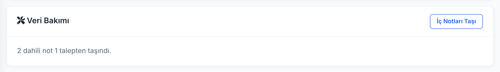
1Yeni sürümde iç notlar zaten ayrı düğüme yazılır; bu aracı yalnızca eski sürümden kalan veriler için, bir kez çalıştırmanız yeter.
Tüm yetkilendirme Firebase Realtime Database kurallarıyla uygulanır; arayüzde bir düğmenin gizlenmesi tek başına güvenlik sağlamaz. Kuralların kaynağı tests/rules/generate-rules.js, çıktısı database.rules.json'dur; çıktı dosyası elle düzenlenmez (testler iki dosyanın eşitliğini doğrular).
generate-rules.js içinde değişikliği yapın, ardından node tests/rules/generate-rules.js ile database.rules.json'u yeniden üretin.
cd tests/rules && npm install && npm test — yetki matrisini (rol × işlem) ve JSON'un güncelliğini doğrular.
Kurallar sıkılaştıysa, eski kayıtların yeni kurallarda kilitlenmemesi için dağıtımdan önce canlı verinin dışa aktarımını node tests/rules/scan-existing-data.cjs ile tarayın (ayrıntı: tests/rules/README.md; çıkış kodu 2 = dağıtımı engelleyen bulgu).
Önce istemci kodunu (site) yayınlayın, doğrulayın; hemen ardından firebase deploy --only database --project parla-bt-web. Kurallar ayrıca elle dağıtılır — Netlify yayını kuralları dağıtmaz (GitHub'da servis hesabı secret'ı tanımlıysa deploy-rules.yml kural değişince kendisi dağıtır).
Müşteri girişiyle talep açıp yanıtlayın; ardından personel girişiyle atayıp yanıtlayın (ayrıntılı liste: docs/yayin-kontrol-listesi.md). Sorun olursa Firebase Console → Realtime Database → Kurallar → Geçmiş sekmesinden önceki sürüme dönebilir veya docs/runbook.md §3'teki geri alma adımlarını izleyebilirsiniz; geri alınan database.rules.json üreteçten farklı olacağı için işi bitince git checkout -- database.rules.json ile dosyayı eski haline getirin.
Arayüzde “Veritabanı erişim izni reddedildi … kuralları yayınladığınızdan emin olun” uyarısı çıkıyorsa, güncel kurallar yayınlanmamış veya bir rol yetkisiz işlem yapıyordur.
docs/runbook.md §4'tedir; üç ayda bir geri yükleme tatbikatı önerilir. Talepler ve Raporlar sayfalarındaki CSV/Excel dışa aktarmaları kısmi bir döküm olarak işe yarar.node --test netlify/tests/*.test.* tests/unit/*.test.mjs, kurallar cd tests/rules && npm test, tarayıcı testleri tests/e2e/*.e2e.cjs (komutların tam listesi depodaki CLAUDE.md ve docs/runbook.md'dedir).node docs/manuals/capture-screens.cjs admin (ekran görüntüleri), node docs/manuals/content/admin/make.cjs && node docs/manuals/build.cjs admin (PDF). Çıktı docs/manuals/out/ altına yazılır; PDF'ler elle support-v2/docs/ klasörüne kopyalanır (docs/manuals/README.md).| Belirti | Olası neden | Çözüm |
|---|---|---|
| Kullanıcılar'a tıklayınca Genel Bakış'a dönüyorum | Sayfayı yalnızca Süper Admin ve Destek Atayıcı açabilir. | Rolünüzü Süper Admin / Destek Atayıcı'dan kontrol ettirin. |
| “Bu talep size atanmadığı için yalnızca görüntüleyebilirsiniz” | Danışman rolü yalnızca atandığı talepte yazar; atama, danışman kaydınızın kullanıcı hesabınızla eşleşmesine dayanır. | Atama isteyin; danışman kaydının e-postası giriş e-postanızla aynı olmalı. |
| Talep size atanmış görünüyor ama “eşleşmesi tamamlanmamış” uyarısı çıkıyor ya da yazamıyorsunuz | Danışman kaydı kullanıcı hesabına bağlanmamış (kimlik bağı yok). | Yönetici Danışmanlar sayfasında Personel ↔ Kullanıcı Eşleştir aracını çalıştırsın; e-postalar aynı olmalı (Bölüm 3.3). |
| “Personel kaydınız bulunamadı. E-posta eşleşmesini kontrol edin.” | Efor eklerken hesabınız hiçbir Danışmanlar kaydıyla eşleşmiyor. | Danışman kaydı açın veya e-postasını düzeltin (Bölüm 3.3). |
| Bildirim zilim hiç dolmuyor | Zil, birincil ya da ikincil danışmanı siz olduğunuz talepler için çalışır; danışman kaydınız/eşleşmeniz yoksa kişisel uyarı üretilmez. | Danışman kaydı e-postasını, eşleşmeyi ve atamayı kontrol edin. |
| “Bu işlem için yetkiniz yok” / “Veritabanı erişim izni reddedildi” | Rolünüz bu işleme izin vermiyor (ör. Danışman firma düzenliyor, PM sözleşme bedeli okuyor) veya güncel kurallar yayınlanmamış. | Yetki matrisine bakın (Bölüm 1.1); kurallar için Bölüm 6.5. |
| Durum güncellenirken “başka biri değiştirdi / geçersiz geçiş” uyarısı | Ekran açıkken talebin durumu başka biri veya otomasyon tarafından değişti; ya da seçilen geçiş matriste yok. | Ekran gerçek duruma yenilenir; izinli seçeneklerle yeniden deneyin (Bölüm 2.4). |
| Toplu işlemde bazı talepler “atlandı” | Talep kapalı/arşivde ya da hedef durum o talep için izinli geçiş değil. | Özet penceresindeki nedene bakın; atlananları tek tek işleyin. |
| PRJ talebi oluşturulamıyor: “proje seçimi zorunludur” | Firmanın aktif projesi yok ya da proje seçilmedi. | Önce Projeler sayfasından projeyi ekleyin (Bölüm 4.2). |
| Kullanıcı oluşturulamadı: “Bu e-posta adresi zaten kayıtlı / kullanımda” | E-posta Firebase kimlik doğrulamasında (profili olmasa bile) ya da kullanıcı listesinde zaten var. | Profilsiz (yetim) hesapsa Yetim Hesabı Onar; profili varsa mevcut hesabı Aktive Et veya Şifre Sıfırla ile kurtarın (Bölüm 3.2). |
| Kullanıcı Yeni Kullanıcı penceresinde “Eski yöntem kullanılıyor” uyarısı | Sunucuda FIREBASE_SERVICE_ACCOUNT tanımlı değil (ya da işlev dağıtılmamış). | Bölüm 6.3'teki adımlarla servis hesabını ekleyin, yeniden dağıtın. |
| “Bu e-posta adresi bir danışman kaydına ait; müşteri kullanıcısı olarak eklenemez” | Aynı e-posta hem personel hem müşteri olamaz. | Müşteri için farklı bir e-posta kullanın. |
| Kullanıcı davet e-postasını almadı / bağlantı çalışmıyor | Bağlantı kısa süreli ve tek kullanımlıktır; e-posta spam'e düşmüş ya da gönderilememiş olabilir. | Kullanıcı ayrıntısında Şifre Sıfırla ile yeni bağlantı gönderin (gönderilemezse bağlantıyı pencereden güvenli kanaldan iletin); Aktiviteler'de E-posta Gönderilemedi kaydına bakın. |
| Kullanıcı giriş yapamıyor | Hesap pasif, şifre hatalı veya “Çok fazla başarısız deneme” kilidi. | Hesabı Aktive Et; birkaç dakika bekleyin; Şifre Sıfırla gönderin. |
| “Oturumunuz uzun süre boşta kaldığı için sona erdi” | Boşta oturum zaman aşımı: personelde 8 saat, müşteride 30 gün. | Yeniden giriş yapın. |
| Müşteri “yeni talep açamıyorum / tip listesinde SUP/ARZ yok” diyor | Talep tipi firma türüne kilitlidir (CUS → SUP/BUG, ARC → ARZ/BUG) ya da firma pasife alınmıştır. | Firma tipini ve durumunu kontrol edin (Bölüm 3.1); gerekirse talebi personel olarak açın. |
| Müşteri kapanmış talebi yeniden açamıyor | Kapanıştan sonra 14 gün geçmiş (kuralda da zorlanır). | Yönetici Yeniden Aç ile açabilir ya da yeni talep açılır. |
| “Gönderilemedi” uyarısı ve Aktiviteler'de E-posta Gönderilemedi | E-posta hattında sorun. | Köşeli parantezdeki hata koduna göre Bölüm 6.2 tablosuna bakın; Test E-postası ile deneyin. |
Müşteri adına talep açtım ama müşteri e-posta almadı.
Müşteriye “Talebiniz alındı” e-postası yalnızca Muhatap seçtiyseniz gider. Muhatap boşsa talep sizin adınıza açılır (Bölüm 2.2).
Bir danışmanın tüm taleplerini başkasına nasıl devrederim?
Talepler listesinde danışmana göre süzüp tümünü işaretleyin (en çok 300), Toplu Ata ile yeni danışmanı seçin ve Yerine ata'yı işaretleyin (Bölüm 2.1). Toplu atamada e-posta gitmez; talepler yeni danışmanın zilinde görünür.
Yanlış durum seçtim, geri alabilir miyim?
İzinli geçiş matrisi geri alma geçişlerini içerir (İşleme Geri Al, Çözümü Geri Al). Süper Admin matris dışı bir geçişi gerekçeyle yapabilir. Gönderilmiş e-posta geri alınamaz.
İç not müşteriye görünür mü?
Hayır. İç notlar ve ekleri ayrı düğümde, yalnızca personel okuma kuralıyla tutulur; e-posta da üretmez.
Firma veya kullanıcıyı silebilir miyim?
Hayır. Firma, kullanıcı ve danışman kayıtları pasife alınır (kullanıcı pasife alınınca Firebase hesabı da kapanır); böylece eski talepler ve raporlar bozulmaz. Silinebilen tek şey talep (arşive alma, Süper Admin için kalıcı silme) ve — danışmanı olmayan — departmandır.
Silinen bir talebi geri getirebilir miyim?
Arşivdeyse evet: Talepler → Arşiv (Silinenler) → Geri Yükle (Süper Admin / Destek Atayıcı). Kalıcı Sil ile silinen talep geri getirilemez; ancak yedekten tek kayıt olarak geri yüklenebilir (docs/runbook.md §4).
Müşteri kapanış onayını vermezse ne olur?
3. günde müşteriye hatırlatma gider; 10. günde talep otomatik kapatılır (müşteri ve danışmana e-posta). Müşteri 14 gün içinde yeniden açabilir. Müşteri bu sürede yanıt yazarsa talep otomatik Yeniden Açıldı olur.
Bir talep neden hâlâ “SLA aşıldı” gösteriyor, durumu Müşteri Bekleniyor yaptım?
Duraklama bekleme süresince saati durdurur ama önceden gerçekleşmiş aşım damgası kalıcıdır. Rozet “SLA duraklatıldı (aşıldı)” der; zilde yeni uyarı çıkmaz.
| Terim | Açıklama |
|---|---|
| Talep | Portal üzerinden açılan destek, arıza veya iş kaydı (müşteri ve yönetim tarafında aynı terim). |
| Muhatap | Bir talebin müşteri tarafındaki kişisi (talep sahibi); personel hesapları için kullanılmaz. |
| Kullanıcı | Portalda hesabı olan kişi; Kullanıcılar sayfası müşteri ve personel hesaplarının listesidir. |
| Danışman | Taleplere atanabilen personel kaydı (Danışmanlar sayfası); kullanıcı hesabından ayrıdır, e-posta ve kimlik bağıyla eşleşir. |
| Birincil danışman | Talepteki sorumlu danışman; liste, iş yükü, performans, zil ve müşteri e-postalarında esas alınır. |
| Hızlı İşlem | Mevcut duruma uygun sonraki adımı tek düğmeyle (notla) uygulayan Admin Paneli kısayolu. |
| Toplu işlem | Listede işaretlenen (en çok 300) taleplere toplu atama veya toplu durum değişikliği uygulama. |
| Arşiv (yumuşak silme) | Talebin silinmiş sayılıp listelerden kalkması; veriler korunur, geri yüklenebilir. Kalıcı silme yalnızca Süper Admin'dedir. |
| İç not | Yalnızca personelin gördüğü, e-posta üretmeyen not. |
| Hazır yanıt | Yanıt kutusuna {musteri_adi}, {talep_no}, {danisman} değişkenleriyle eklenen şablon metin. |
| SLAhizmet seviyesi hedefi | Önceliğe göre ilk yanıt ve çözüm için 7/24 takvim saati hedefi (SUP, ARZ, BUG); müşteri bekleniyor ve kapanış onayı durumlarında durur. |
| Otomasyon | Sunucuda 30 dakikada bir çalışan SLA uyarısı, hatırlatma, otomatik kapanış ve eskalasyon işlevi. |
| Yetim hesap | Firebase'de hesabı olan ama portalda profili olmayan (yarım kalmış oluşturma) hesap. |
| Davet | Kullanıcıya şifre içermeyen bir e-postayla şifre belirleme bağlantısı gönderilerek hesap açılması. |
| Resend | E-postaları gönderen servis; gönderen alan adı doğrulanmış olmalıdır (SPF/DKIM). |
| Netlify Function | /api/send-email ve /api/admin-users adreslerini sunan, e-postayı üreten / hesapları yöneten sunucu işlevleri. |
| Aktivite günlüğü | Değiştirilemez denetim kaydı (Aktiviteler sayfası). |
info@parlabilgiteknolojileri.net
Destek kutusu; talep numarasını konuya yazın.
+90 530 226 77 98
Üretimi durduran acil sorunlarda.